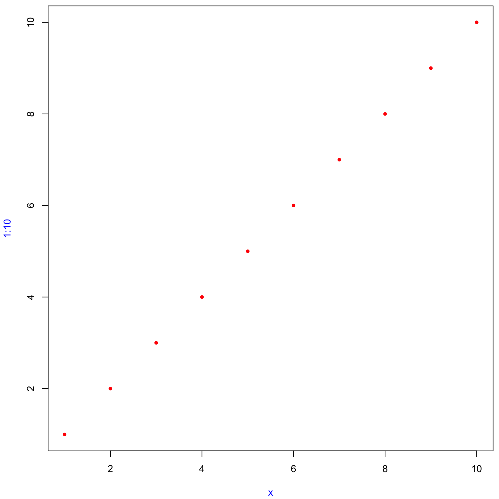

library(lobstr)
library(bench)
library(rlang)
# from https://github.com/hadley/adv-r/blob/master/common.R
knitr::opts_chunk$set(
comment = "#>",
fig.align = "center"
)
knitr::knit_hooks$set(
small_mar = function(before, options, envir) {
if (before) {
par(mar = c(4.1, 4.1, 0.5, 0.5))
}
}
)Advanced R (Foundations)
exercises
advanced-r
Workbook for completing quizzes and exercises from the “Foundations” chapters of Advanced R, second edition, with comparisons to solutions from Advanced R Solutions.
Introduction
This workbook includes answers and solutions to the quizzes and exercises from Advanced R and Advanced R Solutions, organized by chapter. It includes excerpts from both books, copied here.
WARNING, SPOILERS! If you haven’t read Advanced R and intend to complete the quizzes and exercises, don’t read this notebook. It contains my (potentially wrong) answers to both.
2 Names and values
In R, it is important to understand the distinction between an object and its name. Doing so will help you:
- More accurately predict the performance and memory usage of your code.
- Write faster code by avoiding accidental copies, a major source of slow code.
- Better understand R’s functional programming tools.
The goal of this chapter is to help you understand the distinction between names and values, and when R will copy an object.
2 Quiz
- Given the following data frame, how do I create a new column called “3” that contains the sum of
1and2? You may only use$, not[[. What makes1,2, and3challenging as variable names?
df <- data.frame(runif(3), runif(3))
names(df) <- c(1, 2)Answer: use the following code.
df2 <- data.frame(df, df$`1` + df$`2`)
names(df2) <- c(1, 2, 3)Using numbers as names is problematic due to them being interpreted as numeric constants by default.
- In the following code, how much memory does
yoccupy?
x <- runif(1e6)
y <- list(x, x, x)Answer: 3 times the size of x, 24 MB. Note: this is incorrect, as shown by obj_size and obj_addr:
obj_size(x)#> 8.00 MBobj_size(y)#> 8.00 MBobj_addr(y[[1]])#> [1] "0x138e20000"obj_addr(y[[2]])#> [1] "0x138e20000"obj_addr(y[[3]])#> [1] "0x138e20000"- On which line does
aget copied in the following example?
a <- c(1, 5, 3, 2)
obj_addr(a)#> [1] "0x10ceeccf8"b <- a
obj_addr(b)#> [1] "0x10ceeccf8"b[[1]] <- 10
obj_addr(b)#> [1] "0x10cfcf248"Answer: the third line (copy-on-write). [copy-on-modify]
2.2.2 Exercises
- Explain the relationship between
a,b,canddin the following code:
a <- 1:10
b <- a
c <- b
d <- 1:10Answer: a, b, and c all point to the same object (1:10). d points to an identical object at a different address.
AR Solutions: a, b, and c point to the same object (with the same address in memory). This object has the value 1:10. d points to a different object with the same value.
obj_addr(a)#> [1] "0x10caa6668"obj_addr(b)#> [1] "0x10caa6668"obj_addr(c)#> [1] "0x10caa6668"obj_addr(d)#> [1] "0x10cb9f388"- The following code accesses the mean function in multiple ways. Do they all point to the same underlying function object? Verify this with
lobstr::obj_addr().
mean
base::mean
get("mean")
evalq(mean)
match.fun("mean")Check the obj_addr:
obj_addr(mean)#> [1] "0x133fc50a8"obj_addr(base::mean)#> [1] "0x133fc50a8"obj_addr(get("mean"))#> [1] "0x133fc50a8"obj_addr(evalq(mean))#> [1] "0x133fc50a8"obj_addr(match.fun("mean"))#> [1] "0x133fc50a8"Answer: they do.
AR Solutions: Yes, they point to the same object. We confirm this by inspecting the address of the underlying function object.
- By default, base R data import functions, like
read.csv(), will automatically convert non-syntactic names to syntactic ones. Why might this be problematic? What option allows you to suppress this behaviour?
Answer: this could introduce problematic names, like 1. Setting check.names = FALSE suppresses this behavior.
AR Solutions: Column names are often data, and the underlying make.names() transformation is non-invertible, so the default behaviour corrupts data. To avoid this, set check.names = FALSE.
- What rules does
make.names()use to convert non-syntactic names into syntactic ones?
Answer: from ?make.names:
The character “X” is prepended if necessary. All invalid characters are translated to “.”. A missing value is translated to “NA”. Names which match R keywords have a dot appended to them. Duplicated values are altered by make.unique.
AR Solutions: A valid name must start with a letter or a dot (not followed by a number) and may further contain numbers and underscores ("_"s are allowed since R version 1.9.0).
Three main mechanisms ensure syntactically valid names (see ?make.names):
- Names that do not start with a letter or a dot will be prepended with an
"X". The same holds for names that begin with a dot followed by a number. - Additionally, non-valid characters are replaced by a dot.
- Reserved R keywords (see
?reserved) are suffixed by a dot.
Interestingly, some of these transformations are influenced by the current locale. From ?make.names:
The definition of a letter depends on the current locale, but only ASCII digits are considered to be digits.
- I slightly simplified the rules that govern syntactic names. Why is
.123e1not a syntactic name? Read?make.namesfor the full details.
Answer: from ?make.names:
A syntactically valid name consists of letters, numbers and the dot or underline characters and starts with a letter or the dot not followed by a number. Names such as “.2way” are not valid, and neither are the reserved words.
AR Solutions: .123e1 is not a syntactic name, because it starts with one dot which is followed by a number. This makes it a double, 1.23.
2.3.6 Exercises
- Why is
tracemem(1:10)not useful?
Answer: this is tracing an ‘immutable’ object which will always have the same address.
AR Solutions: When 1:10 is called an object with an address in memory is created, but it is not bound to a name. Therefore, the object cannot be called or manipulated from R. As no copies will be made, it is not useful to track the object for copying.
- Explain why
tracemem()shows two copies when you run this code. Hint: carefully look at the difference between this code and the code shown earlier in the section.
rm(list = ls())
x <- c(1L, 2L, 3L)
tracemem(x)#> [1] "<0x10dbb74c8>"x[[3]] <- 4#> tracemem[0x10dbb74c8 -> 0x10dbba8c8]: eval eval eval_with_user_handlers withVisible withCallingHandlers handle timing_fn evaluate_call <Anonymous> evaluate in_dir in_input_dir eng_r block_exec call_block process_group.block process_group withCallingHandlers withCallingHandlers handle_error process_file <Anonymous> <Anonymous> execute .main
#> tracemem[0x10dbba8c8 -> 0x10dc11578]: eval eval eval_with_user_handlers withVisible withCallingHandlers handle timing_fn evaluate_call <Anonymous> evaluate in_dir in_input_dir eng_r block_exec call_block process_group.block process_group withCallingHandlers withCallingHandlers handle_error process_file <Anonymous> <Anonymous> execute .mainuntracemem(x)Answer: unclear. The behavior in R 4.2.0 seems to have changed, since this code shows two copies:
rm(list = ls())
x <- c(1, 2, 3)
tracemem(x)#> [1] "<0x135da3f98>"y <- x
y[[3]] <- 4L#> tracemem[0x135da3f98 -> 0x135c7cd58]: eval eval eval_with_user_handlers withVisible withCallingHandlers handle timing_fn evaluate_call <Anonymous> evaluate in_dir in_input_dir eng_r block_exec call_block process_group.block process_group withCallingHandlers withCallingHandlers handle_error process_file <Anonymous> <Anonymous> execute .mainy[[3]] <- 5L
untracemem(x)AR Solutions: Initially the vector x has integer type. The replacement call assigns a double to the third element of x, which triggers copy-on-modify.
x <- c(1L, 2L, 3L)
tracemem(x)
#> <0x66a4a70>
x[[3]] <- 4
#> tracemem[0x55eec7b3af38 -> 0x55eec774cc18]:We can avoid the copy by sub-assigning an integer instead of a double:
x <- c(1L, 2L, 3L)
tracemem(x)
#> <0x55eec6940ae0>
x[[3]] <- 4LPlease be aware that running this code in RStudio will result in additional copies because of the reference from the environment pane.
- Sketch out the relationship between the following objects:
a <- 1:10
b <- list(a, a)
c <- list(b, a, 1:10)
print("first object")#> [1] "first object"obj_addr(a)#> [1] "0x133215c40"obj_addr(b[[1]])#> [1] "0x133215c40"obj_addr(b[[2]])#> [1] "0x133215c40"obj_addr(c[[2]])#> [1] "0x133215c40"print("second object")#> [1] "second object"obj_addr(b)#> [1] "0x134142948"obj_addr(c[[1]])#> [1] "0x134142948"print("third object")#> [1] "third object"obj_addr(c)#> [1] "0x1339a29d8"print("fourth object (?)")#> [1] "fourth object (?)"obj_addr(c[[3]])#> [1] "0x1338089b0"Answer: four different objects with multiple names.
AR Solutions: a contains a reference to an address with the value 1:10. b contains a list of two references to the same address as a. c contains a list of b (containing two references to a), a (containing the same reference again) and a reference pointing to a different address containing the same value (1:10).
- What happens when you run this code? Draw a picture.
x <- list(1:10)
x[[2]] <- x
ref(x)#> █ [1:0x11256ba88] <list>
#> ├─[2:0x10c1ab308] <int>
#> └─█ [3:0x10c1b5e40] <list>
#> └─[2:0x10c1ab308]Initially x is a list of one element, an int vector 1:10. Then a second list element is added, which points to the original int vector.
AR Solutions: The initial reference tree of x shows that the name x binds to a list object. This object contains a reference to the integer vector 1:10. When x is assigned to an element of itself, copy-on-modify takes place and the list is copied to a new address in memory. The list object previously bound to x is now referenced in the newly created list object. It is no longer bound to a name. The integer vector is referenced twice.
2.4.1 Exercises
- In the following example, why are
object.size(y)andobj_size(y)so radically different? Consult the documentation ofobject.size().
y <- rep(list(runif(1e4)), 100)
object.size(y)#> 8005648 bytesobj_size(y)#> 80.90 kBAnswer: object.size() “does not detect if elements of a list are shared”, which is the case here. That is, it does not detect the list has been replicated 100 times, and overestimates by a factor of 100 compared to object_size().
AR Solutions: object.size() doesn’t account for shared elements within lists. Therefore, the results differ by a factor of ~ 100.
- Take the following list. Why is its size somewhat misleading?
funs <- list(mean, sd, var)
obj_size(funs)#> 17.55 kBAnswer: it doesn’t seem misleading to me, but the list includes the function objects, not the return values. Also, it calculates the size discarding the overlap between the functions. Per the code below, there is some:
obj_size(mean) + obj_size(sd) + obj_size(var)#> 18.08 kBAR Solutions: All three functions are built-in to R as part of the {base} and {stats} packages and hence always available. So, what does it mean to measure the size of something that’s already included in R?
(There’s typically a more general question about what you want to know when you ask for the size of something — do you want to know how much data you’d need to send to communicate the object to someone else (e.g. serialise it), or do you want to know how much memory you’d free if you deleted it?)
- Predict the output of the following code:
a <- runif(1e6)
obj_size(a) # 8,000,048 B ~ 8MB#> 8.00 MB# correct: from example above, runif(1e6) ~= 8MB
b <- list(a, a)
obj_size(b) # slightly larger than obj_size(a)#> 8.00 MB# correct: two lists containing numeric vectors
obj_size(a, b) # slightly larger than obj_size(b)#> 8.00 MB# wrong: a is entirely contained within b
b[[1]][[1]] <- 10
obj_size(b) # copy of b, same size#> 16.00 MB# wrong: double, since R copies an entire column, this adds the size of runif(1e6)
obj_size(a, b) # still mostly overlaps, slightly larger than previous obj_size(a, b)#> 16.00 MB# wrong: a is still entirely contained with b
b[[2]][[1]] <- 10
obj_size(b) # copy of b, same size#> 16.00 MB# wrong: same size since it's still 2 numeric vectors of 1e6 length
obj_size(a, b) # still mostly overlaps, slightly larger than previous obj_size(a, b)#> 24.00 MB# wrong: there is no longer any overlap, so the size of obj_size(a, b) = obj_size(a) = obj_size(b)Answer: answers inline.
AR Solutions:
a <- runif(1e6):
- In R (on most platforms) a length-0 vector has 48 bytes of overhead.
- A single double takes up an additional 8 bytes of memory.
- So, a 1 million double should take up 8,000,048 bytes.
For b <- list(a, a) both list elements contain references to the same memory address. Therefore, no additional memory is required for the second list element. The list itself requires 64 bytes, 48 bytes for an empty list and 8 bytes for each element (obj_size(vector("list", 2))). This lets us predict 8,000,048 B + 64 B = 8,000,112 B.
b[[1]][[1]] <- 10: When we modify the first element of b[[1]] copy-on-modify occurs. Both elements will still have the same size (8,000,040 B), but the first one gets a new address in memory. As b’s elements don’t share references anymore, its object size adds up to the sum of the elements and the length-2 list: 8,000,048 B + 8,000,048 B + 64 B = 16,000,160 B (16 MB). The second element of b still references the same address as a, so the combined size of a and b is the same as b.
b[[2]][[1]] <- 10: When we modify the second element of b, this element will also point to a new memory address. This does not affect the size of the list. However, as b doesn’t share references with a anymore, the memory usage of the combined objects increases.
2.5.3 Exercises
- Explain why the following code doesn’t create a circular list.
x <- list()
x[[1]] <- xAnswer: the name x is assigned to the empty list, and then the first element of x is mapped to the object that x points to, the empty list.
AR Solutions: In this situation copy-on-modify prevents the creation of a circular list. Let us step through the details:
x <- list() # creates initial object
obj_addr(x)
#> [1] "0x55862f23ab80"
tracemem(x)
#> [1] "<0x55862f23ab80>"
x[[1]] <- x # Copy-on-modify triggers new copy
#> tracemem[0x55862f23ab80 -> 0x55862e8ce028]:
obj_addr(x) # copied object has new memory address
#> [1] "0x55862e8ce028"
obj_addr(x[[1]]) # list element contains old memory address
#> [1] "0x55862f23ab80"- Wrap the two methods for subtracting medians into two functions, then use the ‘bench’ package [@bench] to carefully compare their speeds. How does performance change as the number of columns increase?
x_medians <- function(ncol) {
x <- data.frame(matrix(runif(5 * 1e4), ncol = ncol))
medians <- vapply(x, median, numeric(1))
return(list(x = x, medians = medians))
}
df_medians <- function(x, medians) {
# subtract medians using data.frame method
for (i in seq_along(medians)) {
x[[i]] <- x[[i]] - medians[[i]]
}
x
}
ls_medians <- function(x, medians) {
y <- as.list(x)
for (i in seq_along(medians)) {
y[[i]] <- y[[i]] - medians[[i]]
}
y
}
# confirm they both work
xm <- x_medians(5)
head(df_medians(xm$x, xm$medians), 10)#> X1 X2 X3 X4 X5
#> 1 -0.31909169 -0.413144595 -0.35859574 -0.1204953 -0.43504827
#> 2 -0.08093799 0.207107755 0.47311511 0.1770737 0.28367867
#> 3 0.32596949 -0.437373091 0.34864762 -0.3722676 0.18585576
#> 4 -0.11777362 -0.018022014 -0.29952187 -0.1543627 -0.15564994
#> 5 -0.42514173 -0.327696993 -0.21917524 -0.1982858 0.09719632
#> 6 0.07408300 -0.087990720 0.03123350 0.3809340 -0.18972684
#> 7 -0.06706237 0.418502166 -0.10928116 0.2863259 0.03363580
#> 8 -0.26989198 0.432441315 0.05770697 0.4900636 -0.09702116
#> 9 0.02184134 -0.004379089 0.44892609 0.2579126 0.32683060
#> 10 0.15364264 -0.471395641 -0.19426441 -0.3646747 0.09965263head(as.data.frame(ls_medians(xm$x, xm$medians)), 10)#> X1 X2 X3 X4 X5
#> 1 -0.31909169 -0.413144595 -0.35859574 -0.1204953 -0.43504827
#> 2 -0.08093799 0.207107755 0.47311511 0.1770737 0.28367867
#> 3 0.32596949 -0.437373091 0.34864762 -0.3722676 0.18585576
#> 4 -0.11777362 -0.018022014 -0.29952187 -0.1543627 -0.15564994
#> 5 -0.42514173 -0.327696993 -0.21917524 -0.1982858 0.09719632
#> 6 0.07408300 -0.087990720 0.03123350 0.3809340 -0.18972684
#> 7 -0.06706237 0.418502166 -0.10928116 0.2863259 0.03363580
#> 8 -0.26989198 0.432441315 0.05770697 0.4900636 -0.09702116
#> 9 0.02184134 -0.004379089 0.44892609 0.2579126 0.32683060
#> 10 0.15364264 -0.471395641 -0.19426441 -0.3646747 0.09965263# benchmark
mark(df_medians(xm$x, xm$medians))#> # A tibble: 1 × 6
#> expression min median `itr/sec` mem_alloc `gc/sec`
#> <bch:expr> <bch:tm> <bch:tm> <dbl> <bch:byt> <dbl>
#> 1 df_medians(xm$x, xm$medians) 32.1µs 48.2µs 20230. 391KB 305.mark(ls_medians(xm$x, xm$medians))#> # A tibble: 1 × 6
#> expression min median `itr/sec` mem_alloc `gc/sec`
#> <bch:expr> <bch:tm> <bch:tm> <dbl> <bch:byt> <dbl>
#> 1 ls_medians(xm$x, xm$medians) 9.06µs 24.6µs 43623. 391KB 490.mark(as.data.frame(ls_medians(xm$x, xm$medians))) # as.data.frame introduces significant overhead#> # A tibble: 1 × 6
#> expression min median `itr/sec` mem_alloc `gc/sec`
#> <bch:expr> <bch> <bch:> <dbl> <bch:byt> <dbl>
#> 1 as.data.frame(ls_medians(xm$x, xm$m… 108µs 126µs 8057. 391KB 94.4Answer: with 5 columns, the list method is about twice as fast.
xm <- x_medians(10)
mark(df_medians(xm$x, xm$medians))#> # A tibble: 1 × 6
#> expression min median `itr/sec` mem_alloc `gc/sec`
#> <bch:expr> <bch:tm> <bch:tm> <dbl> <bch:byt> <dbl>
#> 1 df_medians(xm$x, xm$medians) 56.9µs 78.7µs 12729. 391KB 150.mark(ls_medians(xm$x, xm$medians))#> # A tibble: 1 × 6
#> expression min median `itr/sec` mem_alloc `gc/sec`
#> <bch:expr> <bch:tm> <bch:tm> <dbl> <bch:byt> <dbl>
#> 1 ls_medians(xm$x, xm$medians) 10.7µs 30.7µs 33069. 391KB 368.xm <- x_medians(20)
mark(df_medians(xm$x, xm$medians))#> # A tibble: 1 × 6
#> expression min median `itr/sec` mem_alloc `gc/sec`
#> <bch:expr> <bch:tm> <bch:tm> <dbl> <bch:byt> <dbl>
#> 1 df_medians(xm$x, xm$medians) 109µs 134µs 7383. 400KB 87.6mark(ls_medians(xm$x, xm$medians))#> # A tibble: 1 × 6
#> expression min median `itr/sec` mem_alloc `gc/sec`
#> <bch:expr> <bch:tm> <bch:tm> <dbl> <bch:byt> <dbl>
#> 1 ls_medians(xm$x, xm$medians) 12.7µs 28.1µs 36352. 392KB 404.With 10 columns, the list method is 3 times as fast. With 20, the list method is 5 times as fast. So, the list method is near constant time regardless of columns, whereas the data.frame method scales linearly with the number of columns.
AR Solutions:
When working directly with the data frame, the execution time grows quadratically with the number of columns in the input data. This is because (e.g.) the first column must be copied n times, the second column n-1 times, and so on. When working with a list, the execution time increases only linearly.
Obviously in the long run, linear growth creates shorter run-times, but there is some cost to this strategy — we have to convert between data structures with as.list() and list2DF(). Even though this is fast and probably doesn’t hurt much, the improved approach doesn’t really pay off in this scenario until we get to a data frame that is about 300 columns wide (with the exact value depending on the characteristics of the system running the code).
- What happens if you attempt to use
tracemem()on an environment?
e <- rlang::env()
try(tracemem(e))#> Error in tracemem(e) :
#> 'tracemem' is not useful for promise and environment objectsAnswer: it throws an error!
AR Solutions: tracemem() cannot be used to mark and trace environments.
The error occurs because “it is not useful to trace NULL, environments, promises, weak references, or external pointer objects, as these are not duplicated” (see ?tracemem). Environments are always modified in place.
3 Vectors
This chapter discusses the most important family of data types in base R: vectors. While you’ve probably already used many (if not all) of the different types of vectors, you may not have thought deeply about how they’re interrelated. In this chapter, I won’t cover individual vectors types in too much detail, but I will show you how all the types fit together as a whole. If you need more details, you can find them in R’s documentation.
Vectors come in two flavours: atomic vectors and lists. They differ in terms of their elements’ types: for atomic vectors, all elements must have the same type; for lists, elements can have different types. While not a vector, NULL is closely related to vectors and often serves the role of a generic zero length vector. This diagram, which we’ll be expanding on throughout this chapter, illustrates the basic relationships:
Every vector can also have attributes, which you can think of as a named list of arbitrary metadata. Two attributes are particularly important. The dimension attribute turns vectors into matrices and arrays and the class attribute powers the S3 object system. While you’ll learn how to use S3 in Chapter 13, here you’ll learn about some of the most important S3 vectors: factors, date and times, data frames, and tibbles. And while 2D structures like matrices and data frames are not necessarily what come to mind when you think of vectors, you’ll also learn why R considers them to be vectors.
rm(list = ls())3.2.5 Exercises
- How do you create raw and complex scalars? (See
?rawand?complex.)
Answer: using either raw(), complex(), or as.raw(), as.complex().
AR Solutions: In R, scalars are represented as vectors of length one. However, there’s no built-in syntax like there is for logicals, integers, doubles, and character vectors to create individual raw and complex values. Instead, you have to create them by calling a function. For raw vectors you can use either as.raw() or charToRaw() to create them from numeric or character values.
In the case of complex numbers, real and imaginary parts may be provided directly to the complex() constructor. You can create purely imaginary numbers (e.g.) 1i, but there is no way to create complex numbers without + (e.g. 1i + 1).
- Test your knowledge of the vector coercion rules by predicting the output of the following uses of
c():
c(1, FALSE) # 1.0, 0.0 - double#> [1] 1 0c("a", 1) # "a", "1" - character#> [1] "a" "1"c(TRUE, 1L) # 1L, 1L - integer#> [1] 1 1typeof(c(1, FALSE))#> [1] "double"typeof(c("a", 1))#> [1] "character"typeof(c(TRUE, 1L))#> [1] "integer"Answer: guesses inline. [correct!]
AR Solutions:
c(1, FALSE) # will be coerced to double -> 1 0
c("a", 1) # will be coerced to character -> "a" "1"
c(TRUE, 1L) # will be coerced to integer -> 1 1- Why is
1 == "1"true? Why is-1 < FALSEtrue? Why is"one" < 2false?
Answers:
1 == "1": the 1 is coerced to “1”-1 < FALSE: FALSE is coerced to 0- `“one” < 2: the 2 is coerced to “2”
AR Solutions: These comparisons are carried out by operator-functions (==, <), which coerce their arguments to a common type. In the examples above, these types will be character, double and character: 1 will be coerced to "1", FALSE is represented as 0 and 2 turns into "2" (and numbers precede letters in lexicographic order (may depend on locale)).
- Why is the default missing value,
NA, a logical vector? What’s special about logical vectors? (Hint: think aboutc(FALSE, NA_character_).)
Answer: NA must be logical so that it can exist in a logical vector.
AR Solutions: The presence of missing values shouldn’t affect the type of an object. Recall that there is a type-hierarchy for coercion from character → double → integer → logical. When combining NAs with other atomic types, the NAs will be coerced to integer (NA_integer_), double (NA_real_) or character (NA_character_) and not the other way round. If NA were a character and added to a set of other values all of these would be coerced to character as well.
- Precisely what do
is.atomic(),is.numeric(), andis.vector()test for?
Answers:
is.atomic(x): tests if x is an atomic vector (logical, integer, numeric, complex, character, and raw) - isFALSEfor listsis.numeric(x): tests if x is an atomic numeric vectoris.vector(x, mode = "any"): tests if x is an atomic vector OR a list or expression
AR Solutions: The documentation states that:
is.atomic()tests if an object is an atomic vector (as defined in Advanced R) or isNULL(!).is.numeric()tests if an object has type integer or double and is not of classfactor,Date,POSIXtordifftime.is.vector()tests if an object is a vector (as defined in Advanced R) or an expression and has no attributes, apart from names.
Atomic vectors are defined in Advanced R as objects of type logical, integer, double, complex, character or raw. Vectors are defined as atomic vectors or lists.
3.3.4 Exercises
- How is
setNames()implemented? How isunname()implemented? Read the source code.
setNames#> function (object = nm, nm)
#> {
#> names(object) <- nm
#> object
#> }
#> <bytecode: 0x1331ec188>
#> <environment: namespace:stats>unname#> function (obj, force = FALSE)
#> {
#> if (!is.null(names(obj)))
#> names(obj) <- NULL
#> if (!is.null(dimnames(obj)) && (force || !is.data.frame(obj)))
#> dimnames(obj) <- NULL
#> obj
#> }
#> <bytecode: 0x132f9f8a0>
#> <environment: namespace:base>Answer: using names(), and dimnames() for unname().
AR Solutions:
Because the data argument comes first, setNames() also works well with the magrittr-pipe operator. When no first argument is given, the result is a named vector (this is rather untypical as required arguments usually come first):
unname() removes existing names (or dimnames) by setting them to NULL.
- What does
dim()return when applied to a 1-dimensional vector? When might you useNROW()orNCOL()?
dim(1:3)#> NULLnrow(1:12)#> NULLNROW(1:12)#> [1] 12ncol(1:12)#> NULLNCOL(1:12)#> [1] 1Answers: NULL. NROW and NCOL are useful when comparing NULL dimensional vectors with matrices and arrays.
AR Solutions: From ?nrow:
dim()will returnNULLwhen applied to a 1d vector.
One may want to use NROW() or NCOL() to handle atomic vectors, lists and NULL values in the same way as one column matrices or data frames.
- How would you describe the following three objects? What makes them different from
1:5?
x1 <- array(1:5, c(1, 1, 5))
x2 <- array(1:5, c(1, 5, 1))
x3 <- array(1:5, c(5, 1, 1))
x1#> , , 1
#>
#> [,1]
#> [1,] 1
#>
#> , , 2
#>
#> [,1]
#> [1,] 2
#>
#> , , 3
#>
#> [,1]
#> [1,] 3
#>
#> , , 4
#>
#> [,1]
#> [1,] 4
#>
#> , , 5
#>
#> [,1]
#> [1,] 5x2#> , , 1
#>
#> [,1] [,2] [,3] [,4] [,5]
#> [1,] 1 2 3 4 5x3#> , , 1
#>
#> [,1]
#> [1,] 1
#> [2,] 2
#> [3,] 3
#> [4,] 4
#> [5,] 5Answer: They have a 3-dimensional structure, arranged in different ways, along the z, x, and y axis.
AR Solutions: These are all “one dimensional”. If you imagine a 3d cube, x1 is in the x-dimension, x2 is in the y-dimension, and x3 is in the z-dimension. In contrast to 1:5, x1, x2 and x3 have a dim attribute.
- An early draft used this code to illustrate
structure():
structure(1:5, comment = "my attribute")#> [1] 1 2 3 4 5But when you print that object you don't see the comment attribute.
Why? Is the attribute missing, or is there something else special about
it? (Hint: try using help.)factor("green", levels = c("red", "amber", "green"))#> [1] green
#> Levels: red amber greendput(factor("green", levels = c("red", "amber", "green")))#> structure(3L, levels = c("red", "amber", "green"), class = "factor")Answer: print doesn’t display the attributes for arbitrary structures, only defined classes, like factors (for example, above).
AR Solutions: The documentation states (see ?comment):
Contrary to other attributes, the comment is not printed (by print or print.default).
Also, from ?attributes:
Note that some attributes (namely class, comment, dim, dimnames, names, row.names and tsp) are treated specially and have restrictions on the values which can be set.
3.4.5 Exercises
- What sort of object does
table()return? What is its type? What attributes does it have? How does the dimensionality change as you tabulate more variables?
a <- letters[1:3]
a_table <- table(a, sample(a))
a_table#>
#> a a b c
#> a 0 1 0
#> b 1 0 0
#> c 0 0 1typeof(a_table)#> [1] "integer"attributes(a_table)#> $dim
#> [1] 3 3
#>
#> $dimnames
#> $dimnames$a
#> [1] "a" "b" "c"
#>
#> $dimnames[[2]]
#> [1] "a" "b" "c"
#>
#>
#> $class
#> [1] "table"b <- letters[1:4]
b_table <- table(b, sample(b))
b_table#>
#> b a b c d
#> a 0 0 1 0
#> b 0 0 0 1
#> c 1 0 0 0
#> d 0 1 0 0attributes(b_table)#> $dim
#> [1] 4 4
#>
#> $dimnames
#> $dimnames$b
#> [1] "a" "b" "c" "d"
#>
#> $dimnames[[2]]
#> [1] "a" "b" "c" "d"
#>
#>
#> $class
#> [1] "table"Answer: an object of class “table”, an array of integer values, with type “integer”. Attributes listed above, the dimensionality is always n by n, where n is the number of variables tabulated.
AR Solutions: table() returns a contingency table of its input variables. It is implemented as an integer vector with class table and dimensions (which makes it act like an array). Its attributes are dim (dimensions) and dimnames (one name for each input column). The dimensions correspond to the number of unique values (factor levels) in each input variable.
- What happens to a factor when you modify its levels?
f1 <- factor(letters)
f1#> [1] a b c d e f g h i j k l m n o p q r s t u v w x y z
#> Levels: a b c d e f g h i j k l m n o p q r s t u v w x y zlevels(f1) <- rev(levels(f1))
f1#> [1] z y x w v u t s r q p o n m l k j i h g f e d c b a
#> Levels: z y x w v u t s r q p o n m l k j i h g f e d c b aAnswer: the factor will remain the same, but the attributes will change. the factor and its levels are reversed.
AR Solutions: The underlying integer values stay the same, but the levels are changed, making it look like the data has changed.
f1 <- factor(letters)
f1#> [1] a b c d e f g h i j k l m n o p q r s t u v w x y z
#> Levels: a b c d e f g h i j k l m n o p q r s t u v w x y zas.integer(f1)#> [1] 1 2 3 4 5 6 7 8 9 10 11 12 13 14 15 16 17 18 19 20 21 22 23 24 25
#> [26] 26levels(f1) <- rev(levels(f1))
f1#> [1] z y x w v u t s r q p o n m l k j i h g f e d c b a
#> Levels: z y x w v u t s r q p o n m l k j i h g f e d c b a- What does this code do? How do
f2andf3differ fromf1?
f2 <- rev(factor(letters))
f2#> [1] z y x w v u t s r q p o n m l k j i h g f e d c b a
#> Levels: a b c d e f g h i j k l m n o p q r s t u v w x y zf3 <- factor(letters, levels = rev(letters))
f3#> [1] a b c d e f g h i j k l m n o p q r s t u v w x y z
#> Levels: z y x w v u t s r q p o n m l k j i h g f e d c b aAnswer: both create a reversed list of letters. f3 also has reversed levels but f2 does not. (correct!)
AR Solutions: For f2 and f3 either the order of the factor elements or its levels are being reversed. For f1 both transformations are occurring.
3.5.4 Exercises
- List all the ways that a list differs from an atomic vector.
Answers:
- Each element can be a different type
- Each element is a reference to an object
- List size can be smaller since elements are references
- Lists can contain other lists
AR Solutions: To summarise:
- Atomic vectors are always homogeneous (all elements must be of the same type). Lists may be heterogeneous (the elements can be of different types) as described in the introduction of the vectors chapter.
- Atomic vectors point to one address in memory, while lists contain a separate reference for each element. (This was described in the list sections of the vectors and the names and values chapters.)
- Subsetting with out-of-bounds and
NAvalues leads to different output. For example,[returnsNAfor atomics andNULLfor lists. (This is described in more detail within the subsetting chapter.)
- Why do you need to use
unlist()to convert a list to an atomic vector? Why doesn’tas.vector()work?
is.vector(list(1:4))#> [1] TRUEdput(as.vector(list(1:4)))#> list(1:4)Answer: a list is considered a vector by as.vector().
AR Solutions: A list is already a vector, though not an atomic one!
- Compare and contrast
c()andunlist()when combining a date and date-time into a single vector.
d <- list(date = as.Date("2022-06-25"), datetime = as.POSIXct("2022-06-25 09:59:40 CDT"))
dput(d)#> list(date = structure(19168, class = "Date"), datetime = structure(1656169180, class = c("POSIXct",
#> "POSIXt"), tzone = ""))dput(c(d))#> list(date = structure(19168, class = "Date"), datetime = structure(1656169180, class = c("POSIXct",
#> "POSIXt"), tzone = ""))dput(unlist(d))#> c(date = 19168, datetime = 1656169180)Answer: c() preserves the list structure. unlist() converts both to double.
AR Solutions: Date and date-time objects are both built upon doubles. While dates store the number of days since the reference date 1970-01-01 (also known as “the Epoch”) in days, date-time-objects (POSIXct) store the time difference to this date in seconds.
date <- as.Date("1970-01-02")
dttm_ct <- as.POSIXct("1970-01-01 01:00", tz = "UTC")
# Internal representations
unclass(date)#> [1] 1unclass(dttm_ct)#> [1] 3600
#> attr(,"tzone")
#> [1] "UTC"As the c() generic only dispatches on its first argument, combining date and date-time objects via c() could lead to surprising results in older R versions (pre R 4.0.0):
# Output in R version 3.6.2
c(date, dttm_ct) # equal to c.Date(date, dttm_ct)
#> [1] "1970-01-02" "1979-11-10"
c(dttm_ct, date) # equal to c.POSIXct(date, dttm_ct)
#> [1] "1970-01-01 02:00:00 CET" "1970-01-01 01:00:01 CET"In the first statement above c.Date() is executed, which incorrectly treats the underlying double of dttm_ct (3600) as days instead of seconds. Conversely, when c.POSIXct() is called on a date, one day is counted as one second only.
We can highlight these mechanics by the following code:
# Output in R version 3.6.2
unclass(c(date, dttm_ct)) # internal representation
#> [1] 1 3600
date + 3599
#> "1979-11-10"As of R 4.0.0 these issues have been resolved and both methods now convert their input first into POSIXct and Date, respectively.
c(dttm_ct, date)#> [1] "1970-01-01 01:00:00 UTC" "1970-01-02 00:00:00 UTC"unclass(c(dttm_ct, date))#> [1] 3600 86400
#> attr(,"tzone")
#> [1] "UTC"c(date, dttm_ct)#> [1] "1970-01-02" "1970-01-01"unclass(c(date, dttm_ct))#> [1] 1 0However, as c() strips the time zone (and other attributes) of POSIXct objects, some caution is still recommended.
(dttm_ct <- as.POSIXct("1970-01-01 01:00", tz = "HST"))#> [1] "1970-01-01 01:00:00 HST"attributes(c(dttm_ct))#> $class
#> [1] "POSIXct" "POSIXt"
#>
#> $tzone
#> [1] "HST"A package that deals with these kinds of problems in more depth and provides a structural solution for them is the vctrs package which is also used throughout the tidyverse.
Let’s look at unlist(), which operates on list input.
# Attributes are stripped
unlist(list(date, dttm_ct))#> [1] 1 39600We see again that dates and date-times are internally stored as doubles. Unfortunately, this is all we are left with, when unlist strips the attributes of the list.
To summarise: c() coerces types and strips time zones. Errors may have occurred in older R versions because of inappropriate method dispatch/immature methods. unlist() strips attributes.
3.6.8 Exercises
- Can you have a data frame with zero rows? What about zero columns?
# from data.frame() examples:
df <- data.frame(x = 1:3, y = 4:6, z = 7:9)
df#> x y z
#> 1 1 4 7
#> 2 2 5 8
#> 3 3 6 9df[, FALSE]#> data frame with 0 columns and 3 rowsdf[FALSE, ]#> [1] x y z
#> <0 rows> (or 0-length row.names)df[FALSE, FALSE]#> data frame with 0 columns and 0 rowsAnswer: yes!
AR Solutions: Yes, you can create these data frames easily; either during creation or via subsetting. Even both dimensions can be zero.
- What happens if you attempt to set rownames that are not unique?
rownames(df)#> [1] "1" "2" "3"try(rownames(df) <- c("a", "a", "b"))#> Warning: non-unique value when setting 'row.names': 'a'#> Error in `.rowNamesDF<-`(x, value = value) :
#> duplicate 'row.names' are not allowedAnswer: error, duplicates not allowed.
AR Solutions: Matrices can have duplicated row names, so this does not cause problems.
Data frames, however, require unique rownames and you get different results depending on how you attempt to set them. If you set them directly or via row.names(), you get an error. If you use subsetting, [ automatically deduplicates.
- If
dfis a data frame, what can you say aboutt(df), andt(t(df))? Perform some experiments, making sure to try different column types.
t(df)#> [,1] [,2] [,3]
#> x 1 2 3
#> y 4 5 6
#> z 7 8 9t(t(df))#> x y z
#> [1,] 1 4 7
#> [2,] 2 5 8
#> [3,] 3 6 9df2 <- data.frame(x = 1:3, y = c("a", "b", "c"), z = 4L:6L, stringsAsFactors = FALSE)
df2#> x y z
#> 1 1 a 4
#> 2 2 b 5
#> 3 3 c 6t(df2)#> [,1] [,2] [,3]
#> x "1" "2" "3"
#> y "a" "b" "c"
#> z "4" "5" "6"t(t(df2))#> x y z
#> [1,] "1" "a" "4"
#> [2,] "2" "b" "5"
#> [3,] "3" "c" "6"Answer: t() coerces the vector types, so t(t(df)) is the same as df only when all columns are the same type.
AR Solutions: Both of t(df) and t(t(df)) will return matrices:
df <- data.frame(x = 1:3, y = letters[1:3])
is.matrix(df)#> [1] FALSEis.matrix(t(df))#> [1] TRUEis.matrix(t(t(df)))#> [1] TRUEThe dimensions will respect the typical transposition rules:
dim(df)#> [1] 3 2dim(t(df))#> [1] 2 3dim(t(t(df)))#> [1] 3 2Because the output is a matrix, every column is coerced to the same type. (It is implemented within t.data.frame() via as.matrix() which is described below).
df#> x y
#> 1 1 a
#> 2 2 b
#> 3 3 ct(df)#> [,1] [,2] [,3]
#> x "1" "2" "3"
#> y "a" "b" "c"- What does
as.matrix()do when applied to a data frame with columns of different types? How does it differ fromdata.matrix()?
as.matrix(df)#> x y
#> [1,] "1" "a"
#> [2,] "2" "b"
#> [3,] "3" "c"as.matrix(df2)#> x y z
#> [1,] "1" "a" "4"
#> [2,] "2" "b" "5"
#> [3,] "3" "c" "6"data.matrix(df2)#> x y z
#> [1,] 1 1 4
#> [2,] 2 2 5
#> [3,] 3 3 6as.data.frame(data.matrix(df2))#> x y z
#> 1 1 1 4
#> 2 2 2 5
#> 3 3 3 6as.data.frame(data.matrix(data.frame(x = 1:3, y = c(0, 0.5, 1), z = 4:6)))#> x y z
#> 1 1 0.0 4
#> 2 2 0.5 5
#> 3 3 1.0 6Answer: as.matrix() coerces all elements to the same type. data.matrix() coerces elements to either integer (when possible) or double (when not).
AR Solutions: The type of the result of as.matrix depends on the types of the input columns (see ?as.matrix):
The method for data frames will return a character matrix if there is only atomic columns and any non-(numeric/logical/complex) column, applying as.vector to factors and format to other non-character columns. Otherwise the usual coercion hierarchy (logical < integer < double < complex) will be used, e.g. all-logical data frames will be coerced to a logical matrix, mixed logical-integer will give an integer matrix, etc.
On the other hand, data.matrix will always return a numeric matrix (see ?data.matrix()).
Return the matrix obtained by converting all the variables in a data frame to numeric mode and then binding them together as the columns of a matrix. Factors and ordered factors are replaced by their internal codes. […] Character columns are first converted to factors and then to integers.
We can illustrate and compare the mechanics of these functions using a concrete example. as.matrix() makes it possible to retrieve most of the original information from the data frame but leaves us with characters. To retrieve all information from data.matrix()’s output, we would need a lookup table for each column.
4 Subsetting
R’s subsetting operators are fast and powerful. Mastering them allows you to succinctly perform complex operations in a way that few other languages can match. Subsetting in R is easy to learn but hard to master because you need to internalise a number of interrelated concepts:
There are six ways to subset atomic vectors.
There are three subsetting operators,
[[,[, and$.Subsetting operators interact differently with different vector types (e.g., atomic vectors, lists, factors, matrices, and data frames).
Subsetting can be combined with assignment.
Subsetting is a natural complement to str(). While str() shows you all the pieces of any object (its structure), subsetting allows you to pull out the pieces that you’re interested in. For large, complex objects, I highly recommend using the interactive RStudio Viewer, which you can activate with View(my_object).
rm(list = ls())4.2.6 Exercises
- Fix each of the following common data frame subsetting errors:
# mtcars[mtcars$cyl = 4, ]
mtcars[mtcars$cyl == 4, ]#> mpg cyl disp hp drat wt qsec vs am gear carb
#> Datsun 710 22.8 4 108.0 93 3.85 2.320 18.61 1 1 4 1
#> Merc 240D 24.4 4 146.7 62 3.69 3.190 20.00 1 0 4 2
#> Merc 230 22.8 4 140.8 95 3.92 3.150 22.90 1 0 4 2
#> Fiat 128 32.4 4 78.7 66 4.08 2.200 19.47 1 1 4 1
#> Honda Civic 30.4 4 75.7 52 4.93 1.615 18.52 1 1 4 2
#> Toyota Corolla 33.9 4 71.1 65 4.22 1.835 19.90 1 1 4 1
#> Toyota Corona 21.5 4 120.1 97 3.70 2.465 20.01 1 0 3 1
#> Fiat X1-9 27.3 4 79.0 66 4.08 1.935 18.90 1 1 4 1
#> Porsche 914-2 26.0 4 120.3 91 4.43 2.140 16.70 0 1 5 2
#> Lotus Europa 30.4 4 95.1 113 3.77 1.513 16.90 1 1 5 2
#> Volvo 142E 21.4 4 121.0 109 4.11 2.780 18.60 1 1 4 2# use `==` (instead of `=`)
# mtcars[-1:4, ]
mtcars[-(1:4), ]#> mpg cyl disp hp drat wt qsec vs am gear carb
#> Hornet Sportabout 18.7 8 360.0 175 3.15 3.440 17.02 0 0 3 2
#> Valiant 18.1 6 225.0 105 2.76 3.460 20.22 1 0 3 1
#> Duster 360 14.3 8 360.0 245 3.21 3.570 15.84 0 0 3 4
#> Merc 240D 24.4 4 146.7 62 3.69 3.190 20.00 1 0 4 2
#> Merc 230 22.8 4 140.8 95 3.92 3.150 22.90 1 0 4 2
#> Merc 280 19.2 6 167.6 123 3.92 3.440 18.30 1 0 4 4
#> Merc 280C 17.8 6 167.6 123 3.92 3.440 18.90 1 0 4 4
#> Merc 450SE 16.4 8 275.8 180 3.07 4.070 17.40 0 0 3 3
#> Merc 450SL 17.3 8 275.8 180 3.07 3.730 17.60 0 0 3 3
#> Merc 450SLC 15.2 8 275.8 180 3.07 3.780 18.00 0 0 3 3
#> Cadillac Fleetwood 10.4 8 472.0 205 2.93 5.250 17.98 0 0 3 4
#> Lincoln Continental 10.4 8 460.0 215 3.00 5.424 17.82 0 0 3 4
#> Chrysler Imperial 14.7 8 440.0 230 3.23 5.345 17.42 0 0 3 4
#> Fiat 128 32.4 4 78.7 66 4.08 2.200 19.47 1 1 4 1
#> Honda Civic 30.4 4 75.7 52 4.93 1.615 18.52 1 1 4 2
#> Toyota Corolla 33.9 4 71.1 65 4.22 1.835 19.90 1 1 4 1
#> Toyota Corona 21.5 4 120.1 97 3.70 2.465 20.01 1 0 3 1
#> Dodge Challenger 15.5 8 318.0 150 2.76 3.520 16.87 0 0 3 2
#> AMC Javelin 15.2 8 304.0 150 3.15 3.435 17.30 0 0 3 2
#> Camaro Z28 13.3 8 350.0 245 3.73 3.840 15.41 0 0 3 4
#> Pontiac Firebird 19.2 8 400.0 175 3.08 3.845 17.05 0 0 3 2
#> Fiat X1-9 27.3 4 79.0 66 4.08 1.935 18.90 1 1 4 1
#> Porsche 914-2 26.0 4 120.3 91 4.43 2.140 16.70 0 1 5 2
#> Lotus Europa 30.4 4 95.1 113 3.77 1.513 16.90 1 1 5 2
#> Ford Pantera L 15.8 8 351.0 264 4.22 3.170 14.50 0 1 5 4
#> Ferrari Dino 19.7 6 145.0 175 3.62 2.770 15.50 0 1 5 6
#> Maserati Bora 15.0 8 301.0 335 3.54 3.570 14.60 0 1 5 8
#> Volvo 142E 21.4 4 121.0 109 4.11 2.780 18.60 1 1 4 2# use `-(1:4)` (instead of `-1:4`)
# mtcars[mtcars$cyl <= 5]
mtcars[mtcars$cyl <= 5, ]#> mpg cyl disp hp drat wt qsec vs am gear carb
#> Datsun 710 22.8 4 108.0 93 3.85 2.320 18.61 1 1 4 1
#> Merc 240D 24.4 4 146.7 62 3.69 3.190 20.00 1 0 4 2
#> Merc 230 22.8 4 140.8 95 3.92 3.150 22.90 1 0 4 2
#> Fiat 128 32.4 4 78.7 66 4.08 2.200 19.47 1 1 4 1
#> Honda Civic 30.4 4 75.7 52 4.93 1.615 18.52 1 1 4 2
#> Toyota Corolla 33.9 4 71.1 65 4.22 1.835 19.90 1 1 4 1
#> Toyota Corona 21.5 4 120.1 97 3.70 2.465 20.01 1 0 3 1
#> Fiat X1-9 27.3 4 79.0 66 4.08 1.935 18.90 1 1 4 1
#> Porsche 914-2 26.0 4 120.3 91 4.43 2.140 16.70 0 1 5 2
#> Lotus Europa 30.4 4 95.1 113 3.77 1.513 16.90 1 1 5 2
#> Volvo 142E 21.4 4 121.0 109 4.11 2.780 18.60 1 1 4 2# `,` is missing
# mtcars[mtcars$cyl == 4 | 6, ]
mtcars[mtcars$cyl == 4 | mtcars$cyl == 6, ]#> mpg cyl disp hp drat wt qsec vs am gear carb
#> Mazda RX4 21.0 6 160.0 110 3.90 2.620 16.46 0 1 4 4
#> Mazda RX4 Wag 21.0 6 160.0 110 3.90 2.875 17.02 0 1 4 4
#> Datsun 710 22.8 4 108.0 93 3.85 2.320 18.61 1 1 4 1
#> Hornet 4 Drive 21.4 6 258.0 110 3.08 3.215 19.44 1 0 3 1
#> Valiant 18.1 6 225.0 105 2.76 3.460 20.22 1 0 3 1
#> Merc 240D 24.4 4 146.7 62 3.69 3.190 20.00 1 0 4 2
#> Merc 230 22.8 4 140.8 95 3.92 3.150 22.90 1 0 4 2
#> Merc 280 19.2 6 167.6 123 3.92 3.440 18.30 1 0 4 4
#> Merc 280C 17.8 6 167.6 123 3.92 3.440 18.90 1 0 4 4
#> Fiat 128 32.4 4 78.7 66 4.08 2.200 19.47 1 1 4 1
#> Honda Civic 30.4 4 75.7 52 4.93 1.615 18.52 1 1 4 2
#> Toyota Corolla 33.9 4 71.1 65 4.22 1.835 19.90 1 1 4 1
#> Toyota Corona 21.5 4 120.1 97 3.70 2.465 20.01 1 0 3 1
#> Fiat X1-9 27.3 4 79.0 66 4.08 1.935 18.90 1 1 4 1
#> Porsche 914-2 26.0 4 120.3 91 4.43 2.140 16.70 0 1 5 2
#> Lotus Europa 30.4 4 95.1 113 3.77 1.513 16.90 1 1 5 2
#> Ferrari Dino 19.7 6 145.0 175 3.62 2.770 15.50 0 1 5 6
#> Volvo 142E 21.4 4 121.0 109 4.11 2.780 18.60 1 1 4 2# use `mtcars$cyl == 6` (instead of `6`)
# or `%in% c(4, 6)` (instead of `== 4 | 6`)Answer: fixed!
AR solutions: see the comments below the fixed code.
- Why does the following code yield five missing values? (Hint: why is it different from
x[NA_real_]?)
x <- 1:5
x[NA]#> [1] NA NA NA NA NAx[NA_real_]#> [1] NAx[TRUE]#> [1] 1 2 3 4 5Answer: NA is a logical constant of length 1.
AR Solutions: In contrast to NA_real, NA has logical type and logical vectors are recycled to the same length as the vector being subset, i.e. x[NA] is recycled to x[c(NA, NA, NA, NA, NA)].
- What does
upper.tri()return? How does subsetting a matrix with it work? Do we need any additional subsetting rules to describe its behaviour?
x <- outer(1:5, 1:5, FUN = "*")
x#> [,1] [,2] [,3] [,4] [,5]
#> [1,] 1 2 3 4 5
#> [2,] 2 4 6 8 10
#> [3,] 3 6 9 12 15
#> [4,] 4 8 12 16 20
#> [5,] 5 10 15 20 25x[upper.tri(x)]#> [1] 2 3 6 4 8 12 5 10 15 20Answer: upper.tri() returns a matrix of logicals, which can be used to subset the upper triangle. This is subsetting by matrix, which is new.
AR Solutions: upper.tri(x) returns a logical matrix, which contains TRUE values above the diagonal and FALSE values everywhere else. In upper.tri() the positions for TRUE and FALSE values are determined by comparing x’s row and column indices via .row(dim(x)) < .col(dim(x)).
When subsetting with logical matrices, all elements that correspond to TRUE will be selected. Matrices extend vectors with a dimension attribute, so the vector forms of subsetting can be used (including logical subsetting). We should take care, that the dimensions of the subsetting matrix match the object of interest — otherwise unintended selections due to vector recycling may occur. Please also note, that this form of subsetting returns a vector instead of a matrix, as the subsetting alters the dimensions of the object.
- Why does
mtcars[1:20]return an error? How does it differ from the similarmtcars[1:20, ]?
try(mtcars[1:20])#> Error in `[.data.frame`(mtcars, 1:20) : undefined columns selectedmtcars[1:20, ]#> mpg cyl disp hp drat wt qsec vs am gear carb
#> Mazda RX4 21.0 6 160.0 110 3.90 2.620 16.46 0 1 4 4
#> Mazda RX4 Wag 21.0 6 160.0 110 3.90 2.875 17.02 0 1 4 4
#> Datsun 710 22.8 4 108.0 93 3.85 2.320 18.61 1 1 4 1
#> Hornet 4 Drive 21.4 6 258.0 110 3.08 3.215 19.44 1 0 3 1
#> Hornet Sportabout 18.7 8 360.0 175 3.15 3.440 17.02 0 0 3 2
#> Valiant 18.1 6 225.0 105 2.76 3.460 20.22 1 0 3 1
#> Duster 360 14.3 8 360.0 245 3.21 3.570 15.84 0 0 3 4
#> Merc 240D 24.4 4 146.7 62 3.69 3.190 20.00 1 0 4 2
#> Merc 230 22.8 4 140.8 95 3.92 3.150 22.90 1 0 4 2
#> Merc 280 19.2 6 167.6 123 3.92 3.440 18.30 1 0 4 4
#> Merc 280C 17.8 6 167.6 123 3.92 3.440 18.90 1 0 4 4
#> Merc 450SE 16.4 8 275.8 180 3.07 4.070 17.40 0 0 3 3
#> Merc 450SL 17.3 8 275.8 180 3.07 3.730 17.60 0 0 3 3
#> Merc 450SLC 15.2 8 275.8 180 3.07 3.780 18.00 0 0 3 3
#> Cadillac Fleetwood 10.4 8 472.0 205 2.93 5.250 17.98 0 0 3 4
#> Lincoln Continental 10.4 8 460.0 215 3.00 5.424 17.82 0 0 3 4
#> Chrysler Imperial 14.7 8 440.0 230 3.23 5.345 17.42 0 0 3 4
#> Fiat 128 32.4 4 78.7 66 4.08 2.200 19.47 1 1 4 1
#> Honda Civic 30.4 4 75.7 52 4.93 1.615 18.52 1 1 4 2
#> Toyota Corolla 33.9 4 71.1 65 4.22 1.835 19.90 1 1 4 1Answer: mtcars[1:20] selects the first 20 columns, but there are only 11. mtcars[1:20, ] selects the first 20 rows of 32.
AR Solutions: When subsetting a data frame with a single vector, it behaves the same way as subsetting a list of columns. So, mtcars[1:20] would return a data frame containing the first 20 columns of the dataset. However, as mtcars has only 11 columns, the index will be out of bounds and an error is thrown. mtcars[1:20, ] is subsetted with two vectors, so 2d subsetting kicks in, and the first index refers to rows.
- Implement your own function that extracts the diagonal entries from a matrix (it should behave like
diag(x)wherexis a matrix).
m <- matrix(ncol = 3, byrow = TRUE, c(
1, 4, 7,
2, 5, 8,
3, 6, 9
))
m#> [,1] [,2] [,3]
#> [1,] 1 4 7
#> [2,] 2 5 8
#> [3,] 3 6 9diag(m)#> [1] 1 5 9my_diag <- function(x) {
diag_element <- function(n, x) {
x[n, n]
}
vapply(seq_len(nrow(m)), diag_element, 1, x)
}
my_diag(m)#> [1] 1 5 9Answer: code above.
AR Solutions: The elements in the diagonal of a matrix have the same row- and column indices. This characteristic can be used to create a suitable numeric matrix used for subsetting.
diag2 <- function(x) {
n <- min(nrow(x), ncol(x))
idx <- cbind(seq_len(n), seq_len(n))
x[idx]
}
# Let's check if it works
(x <- matrix(1:30, 5))#> [,1] [,2] [,3] [,4] [,5] [,6]
#> [1,] 1 6 11 16 21 26
#> [2,] 2 7 12 17 22 27
#> [3,] 3 8 13 18 23 28
#> [4,] 4 9 14 19 24 29
#> [5,] 5 10 15 20 25 30diag(x)#> [1] 1 7 13 19 25diag2(x)#> [1] 1 7 13 19 25- What does
df[is.na(df)] <- 0do? How does it work?
Answer: sets the NA values in df to 0, by first selecting NA values then assigning 0.
df <- data.frame(x = c(1, 2, NA), y = c(4, NA, 6), z = c(NA, 8, 9))
df#> x y z
#> 1 1 4 NA
#> 2 2 NA 8
#> 3 NA 6 9df[is.na(df)] <- 0
df#> x y z
#> 1 1 4 0
#> 2 2 0 8
#> 3 0 6 9Correct!
AR Solutions: This expression replaces the NAs in df with 0. Here is.na(df) returns a logical matrix that encodes the position of the missing values in df. Subsetting and assignment are then combined to replace only the missing values.
4.3.5 Exercises
- Brainstorm as many ways as possible to extract the third value from the
cylvariable in themtcarsdataset.
mtcars$cyl[3]#> [1] 4mtcars$cyl[[3]]#> [1] 4mtcars[["cyl"]][[3]]#> [1] 4mtcars[3, 2]#> [1] 4mtcars[[3, 2]]#> [1] 4mtcars[["Datsun 710", "cyl"]]#> [1] 4mtcars[-c(1:2, 4:32), -c(1, 3:11)]#> [1] 4Answer: code above (some variations omitted). There are many more.
AR Solutions: Base R already provides an abundance of possibilities:
# Select column first
mtcars$cyl[[3]]#> [1] 4mtcars[, "cyl"][[3]]#> [1] 4mtcars[["cyl"]][[3]]#> [1] 4with(mtcars, cyl[[3]])#> [1] 4# Select row first
mtcars[3, ]$cyl#> [1] 4mtcars[3, "cyl"]#> [1] 4mtcars[3, ][, "cyl"]#> [1] 4mtcars[3, ][["cyl"]]#> [1] 4# Select simultaneously
mtcars[3, 2]#> [1] 4mtcars[[c(2, 3)]]#> [1] 4- Given a linear model, e.g.,
mod <- lm(mpg ~ wt, data = mtcars), extract the residual degrees of freedom. Then extract the R squared from the model summary (summary(mod))
mod <- lm(mpg ~ wt, data = mtcars)
mod$df.residual#> [1] 30mod_sum <- summary(mod)
mod_sum$r.squared#> [1] 0.7528328mod_sum#>
#> Call:
#> lm(formula = mpg ~ wt, data = mtcars)
#>
#> Residuals:
#> Min 1Q Median 3Q Max
#> -4.5432 -2.3647 -0.1252 1.4096 6.8727
#>
#> Coefficients:
#> Estimate Std. Error t value Pr(>|t|)
#> (Intercept) 37.2851 1.8776 19.858 < 2e-16 ***
#> wt -5.3445 0.5591 -9.559 1.29e-10 ***
#> ---
#> Signif. codes: 0 '***' 0.001 '**' 0.01 '*' 0.05 '.' 0.1 ' ' 1
#>
#> Residual standard error: 3.046 on 30 degrees of freedom
#> Multiple R-squared: 0.7528, Adjusted R-squared: 0.7446
#> F-statistic: 91.38 on 1 and 30 DF, p-value: 1.294e-10Answer: code above.
AR Solutions: mod is of type list, which opens up several possibilities. We use $ or [[ to extract a single element:
mod <- lm(mpg ~ wt, data = mtcars)
mod$df.residual#> [1] 30mod[["df.residual"]]#> [1] 30The same also applies to summary(mod), so we could use, e.g.:
summary(mod)$r.squared#> [1] 0.7528328(Tip: The broom package provides a very useful approach to work with models in a tidy way.)
4.5.9 Exercises
- How would you randomly permute the columns of a data frame? (This is an important technique in random forests.) Can you simultaneously permute the rows and columns in one step?
df <- data.frame(x = 1:5, y = 5:1, z = letters[1:5], row.names = 1:5)
df[, sample(ncol(df))]#> x y z
#> 1 1 5 a
#> 2 2 4 b
#> 3 3 3 c
#> 4 4 2 d
#> 5 5 1 edf[sample(nrow(df)), sample(ncol(df))]#> y x z
#> 3 3 3 c
#> 2 4 2 b
#> 4 2 4 d
#> 5 1 5 e
#> 1 5 1 aAnswer: using sample(). Yes!
AR Solutions: This can be achieved by combining [ and sample():
# Permute columns
mtcars[sample(ncol(mtcars))]
# Permute columns and rows in one step
mtcars[sample(nrow(mtcars)), sample(ncol(mtcars))]- How would you select a random sample of
mrows from a data frame? What if the sample had to be contiguous (i.e., with an initial row, a final row, and every row in between)?
sample_rows <- function(df, m, contiguous = FALSE) {
if (m > nrow(df)) {
stop("sample size '", m, "' is larger than the number of rows, '", nrow(df), "'")
}
if (contiguous) {
first_row <- sample(nrow(df) - m + 1, 1)
last_row <- first_row + m - 1
return(df[first_row:last_row, ])
}
df[sample(nrow(df), m), ]
}
sample_rows(df, 3)#> x y z
#> 4 4 2 d
#> 1 1 5 a
#> 3 3 3 csample_rows(df, 3, contiguous = TRUE)#> x y z
#> 2 2 4 b
#> 3 3 3 c
#> 4 4 2 dtry(sample_rows(df, 6))#> Error in sample_rows(df, 6) :
#> sample size '6' is larger than the number of rows, '5'Answer: code above.
AR Solutions: Selecting m random rows from a data frame can be achieved through subsetting.
m <- 10
mtcars[sample(nrow(mtcars), m), ]Holding successive lines together as a blocked sample requires only a certain amount of caution in order to obtain the correct start and end index.
start <- sample(nrow(mtcars) - m + 1, 1)
end <- start + m - 1
mtcars[start:end, , drop = FALSE]- How could you put the columns in a data frame in alphabetical order?
mtcars[sort(colnames(mtcars))]#> am carb cyl disp drat gear hp mpg qsec vs wt
#> Mazda RX4 1 4 6 160.0 3.90 4 110 21.0 16.46 0 2.620
#> Mazda RX4 Wag 1 4 6 160.0 3.90 4 110 21.0 17.02 0 2.875
#> Datsun 710 1 1 4 108.0 3.85 4 93 22.8 18.61 1 2.320
#> Hornet 4 Drive 0 1 6 258.0 3.08 3 110 21.4 19.44 1 3.215
#> Hornet Sportabout 0 2 8 360.0 3.15 3 175 18.7 17.02 0 3.440
#> Valiant 0 1 6 225.0 2.76 3 105 18.1 20.22 1 3.460
#> Duster 360 0 4 8 360.0 3.21 3 245 14.3 15.84 0 3.570
#> Merc 240D 0 2 4 146.7 3.69 4 62 24.4 20.00 1 3.190
#> Merc 230 0 2 4 140.8 3.92 4 95 22.8 22.90 1 3.150
#> Merc 280 0 4 6 167.6 3.92 4 123 19.2 18.30 1 3.440
#> Merc 280C 0 4 6 167.6 3.92 4 123 17.8 18.90 1 3.440
#> Merc 450SE 0 3 8 275.8 3.07 3 180 16.4 17.40 0 4.070
#> Merc 450SL 0 3 8 275.8 3.07 3 180 17.3 17.60 0 3.730
#> Merc 450SLC 0 3 8 275.8 3.07 3 180 15.2 18.00 0 3.780
#> Cadillac Fleetwood 0 4 8 472.0 2.93 3 205 10.4 17.98 0 5.250
#> Lincoln Continental 0 4 8 460.0 3.00 3 215 10.4 17.82 0 5.424
#> Chrysler Imperial 0 4 8 440.0 3.23 3 230 14.7 17.42 0 5.345
#> Fiat 128 1 1 4 78.7 4.08 4 66 32.4 19.47 1 2.200
#> Honda Civic 1 2 4 75.7 4.93 4 52 30.4 18.52 1 1.615
#> Toyota Corolla 1 1 4 71.1 4.22 4 65 33.9 19.90 1 1.835
#> Toyota Corona 0 1 4 120.1 3.70 3 97 21.5 20.01 1 2.465
#> Dodge Challenger 0 2 8 318.0 2.76 3 150 15.5 16.87 0 3.520
#> AMC Javelin 0 2 8 304.0 3.15 3 150 15.2 17.30 0 3.435
#> Camaro Z28 0 4 8 350.0 3.73 3 245 13.3 15.41 0 3.840
#> Pontiac Firebird 0 2 8 400.0 3.08 3 175 19.2 17.05 0 3.845
#> Fiat X1-9 1 1 4 79.0 4.08 4 66 27.3 18.90 1 1.935
#> Porsche 914-2 1 2 4 120.3 4.43 5 91 26.0 16.70 0 2.140
#> Lotus Europa 1 2 4 95.1 3.77 5 113 30.4 16.90 1 1.513
#> Ford Pantera L 1 4 8 351.0 4.22 5 264 15.8 14.50 0 3.170
#> Ferrari Dino 1 6 6 145.0 3.62 5 175 19.7 15.50 0 2.770
#> Maserati Bora 1 8 8 301.0 3.54 5 335 15.0 14.60 0 3.570
#> Volvo 142E 1 2 4 121.0 4.11 4 109 21.4 18.60 1 2.780Answer: using sort(colnames).
AR Solutions: We combine [ with order() or sort():
mtcars[order(names(mtcars))]
mtcars[sort(names(mtcars))]5 Control flow
There are two primary tools of control flow: choices and loops. Choices, like if statements and switch() calls, allow you to run different code depending on the input. Loops, like for and while, allow you to repeatedly run code, typically with changing options. I’d expect that you’re already familiar with the basics of these functions so I’ll briefly cover some technical details and then introduce some useful, but lesser known, features.
The condition system (messages, warnings, and errors), which you’ll learn about in Chapter 8, also provides non-local control flow.
rm(list = ls())5.2.4 Exercises
- What type of vector does each of the following calls to
ifelse()return? Read the documentation and write down the rules in your own words.
ifelse(TRUE, 1, "no")#> [1] 1typeof(ifelse(TRUE, 1, "no")) # double#> [1] "double"ifelse(FALSE, 1, "no")#> [1] "no"typeof(ifelse(FALSE, 1, "no")) # character#> [1] "character"ifelse(NA, 1, "no")#> [1] NAtypeof(ifelse(NA, 1, "no")) # logical#> [1] "logical"ifelse(NULL, 1, "no")#> logical(0)Answer:
- if
testis true, return a vector of the same length astest(1) populated with “yes” - here 1 is a double, 1L would be integer - if
testis false, return a vector of the same length astest(1) populated with “no” - here “no” is a character - if
testisNA, returnNA, and iftestisNULL, returnlogical(0)
AR Solutions: The arguments of ifelse() are named test, yes and no. In general, ifelse() returns the entry for yes when test is TRUE, the entry for no when test is FALSE and NA when test is NA. Therefore, the expressions above return vectors of type double (1), character ("no") and logical (NA).
To be a little more precise, we will cite the part of the documentation on the return value of ifelse():
A vector of the same length and attributes (including dimensions and “class”) as test and data values from the values of yes or no. The mode of the answer will be coerced from logical to accommodate first any values taken from yes and then any values taken from no.
This is surprising because it uses the type of test. In practice this means, that test is first converted to logical and if the result is neither TRUE nor FALSE, simply as.logical(test) is returned.
- Why does the following code work?
x <- 1:10
if (length(x)) "not empty" else "empty"#> [1] "not empty"x <- numeric()
if (length(x)) "not empty" else "empty"#> [1] "empty"Answer: in the first example, length(x) is nonzero, which evaluates to TRUE. In the second example, numeric() returns a vector of length 0 (the default), length(x) is zero, which evaluates to FALSE.
AR Solutions: if() expects a logical condition, but also accepts a numeric vector where 0 is treated as FALSE and all other numbers are treated as TRUE. Numerical missing values (including NaN) lead to an error in the same way that a logical missing, NA, does.
5.3.3 Exercises
- Why does this code succeed without errors or warnings?
x <- numeric() # x is numeric(0)
out <- vector("list", length(x)) # out is list(0)
for (i in 1:length(x)) { # nolint: seq_linter. i is 1, then 0.
out[i] <- x[i]^2 # when i = 1 x[1] is NA, sets out[1] to NA. when i = 0 nothing happens
}
out#> [[1]]
#> [1] NAAnswer: in addition to notes above, out[0] and x[0] return a zero-length vector.
AR Solutions: This loop is a delicate issue, and we have to consider a few points to explain why it is evaluated without raising any errors or warnings.
The beginning of this code smell is the statement 1:length(x) which creates the index of the for loop. As x has length 0 1:length(x) counts down from 1 to 0. This issue is typically avoided via usage of seq_along(x) or similar helpers which would just generate integer(0) in this case.
As we use [<- and [ for indexing 0-length vectors at their first and zeroth position, we need to be aware of their subsetting behaviour for out-of-bounds and zero indices.
During the first iteration x[1] will generate an NA (out-of-bounds indexing for atomics). The resulting NA (from squaring) will be assigned to the empty length-1 list out[1] (out-of-bounds indexing for lists).
In the next iteration, x[0] will return numeric(0) (zero indexing for atomics). Again, squaring doesn’t change the value and numeric(0) is assigned to out[0] (zero indexing for lists). Assigning a 0-length vector to a 0-length subset works but doesn’t change the object.
Overall, the code works, because each step includes valid R operations (even though the result may not be what the user intended).
- When the following code is evaluated, what can you say about the vector being iterated?
xs <- c(1, 2, 3)
for (x in xs) {
xs <- c(xs, x * 2)
}
xs#> [1] 1 2 3 2 4 6Answer: x iterates from 1 to 3, and is not affected by changes to xs during the loop, while xs is updated.
AR Solution: In this loop x takes on the values of the initial xs (1, 2 and 3), indicating that it is evaluated just once in the beginning of the loop, not after each iteration. (Otherwise, we would run into an infinite loop.)
- What does the following code tell you about when the index is updated?
for (i in 1:3) {
i <- i * 2
print(i)
}#> [1] 2
#> [1] 4
#> [1] 6Answer: the index is updated at the beginning of each loop.
AR Solutions: In a for loop the index is updated in the beginning of each iteration. Therefore, reassigning the index symbol during one iteration doesn’t affect the following iterations. (Again, we would otherwise run into an infinite loop.)
6 Functions
If you’re reading this book, you’ve probably already created many R functions and know how to use them to reduce duplication in your code. In this chapter, you’ll learn how to turn that informal, working knowledge into more rigorous, theoretical understanding. And while you’ll see some interesting tricks and techniques along the way, keep in mind that what you’ll learn here will be important for understanding the more advanced topics discussed later in the book.
rm(list = ls())6 Quiz
Answer the following questions to see if you can safely skip this chapter.
What are the three components of a function? a: arguments, code, return value [body, arguments, environment]
What does the following code return? a: 11 [correct!]
x <- 10
f1 <- function(x) {
function() {
x + 10
}
}
f1(1)()#> [1] 11- How would you usually write this code? a:
1 + 2 * 3[correct! …1 + (2 * 3)]
`+`(1, `*`(2, 3))- How could you make this call easier to read?
mean(c(1:10, NA), na.rm = TRUE)[correct!]
mean(, TRUE, x = c(1:10, NA))- Does the following code throw an error when executed? Why or why not? a: no, due to lazy evaluation, the
stop()is never run [correct! … second argument is never used]
f2 <- function(a, b) {
a * 10
}
f2(10, stop("This is an error!"))#> [1] 100What is an infix function? How do you write it? What’s a replacement function? How do you write it? a:
function(x) x. ??? [see 6.8.3 and 6.8.4]How do you ensure that cleanup action occurs regardless of how a function exits? a: ??? [
on.exit()]
6.2.5 Exercises
- Given a name, like
"mean",match.fun()lets you find a function. Given a function, can you find its name? Why doesn’t that make sense in R?
Answer: a function is an object and could have multiple names pointing to it.
AR Solutions: In R there is no one-to-one mapping between functions and names. A name always points to a single object, but an object may have zero, one or many names.
- It’s possible (although typically not useful) to call an anonymous function. Which of the two approaches below is correct? Why?
function(x) 3()#> function(x) 3()(function(x) 3)()#> [1] 3Answer: The second is correct, as the first is the form of defining a function.
AR Solutions: The second approach is correct.
The anonymous function function(x) 3 is surrounded by a pair of parentheses before it is called by (). These extra parentheses separate the function call from the anonymous function’s body. Without them a function with the invalid body 3() is returned, which throws an error when we call it.
- A good rule of thumb is that an anonymous function should fit on one line and shouldn’t need to use
{}. Review your code. Where could you have used an anonymous function instead of a named function? Where should you have used a named function instead of an anonymous function?
Answer: in rdev::build_analysis_site(), analysis_menu_item() is properly written as a named function, where get_component() could be written as an anonymous function, with dir_check_copy() and dir_check_delete() potentially either.
AR Solutions: The use of anonymous functions allows concise and elegant code in certain situations. However, they miss a descriptive name and when re-reading the code, it can take a while to figure out what they do. That’s why it’s helpful to give long and complex functions a descriptive name. It may be worthwhile to take a look at your own projects or other people’s code to reflect on this part of your coding style.
- What function allows you to tell if an object is a function? What function allows you to tell if a function is a primitive function?
Answer: is.function() and is.primitive().
AR Solutions: Use is.function() to test if an object is a function. Consider using is.primitive() to test specifically for primitive functions.
- This code makes a list of all functions in the base package.
objs <- mget(ls("package:base", all = TRUE), inherits = TRUE)#> Warning in ls("package:base", all = TRUE): partial argument match of 'all' to
#> 'all.names'funs <- Filter(is.function, objs)Use it to answer the following questions:
- Which base function has the most arguments?
- How many base functions have no arguments? What’s special about those functions?
- How could you adapt the code to find all primitive functions?
fun_args <- data.frame(
name = names(funs),
args = unname(vapply(funs, function(x) length(formals(x)), 1L))
)
head(fun_args[order(fun_args$args, decreasing = TRUE), ], 10)#> name args
#> 1070 scan 22
#> 570 format.default 16
#> 1123 source 16
#> 583 formatC 15
#> 764 library 13
#> 821 merge.data.frame 13
#> 920 prettyNum 13
#> 1233 system2 11
#> 928 print.default 10
#> 1065 save 10fun_args[fun_args$args == 0, ]#> name args
#> 1 - 0
#> 4 : 0
#> 5 :: 0
#> 6 ::: 0
#> 7 ! 0
#> 10 != 0
#> 13 ...elt 0
#> 14 ...length 0
#> 15 ...names 0
#> 20 .C 0
#> 21 .cache_class 0
#> 22 .Call 0
#> 23 .Call.graphics 0
#> 25 .class2 0
#> 42 .External 0
#> 43 .External.graphics 0
#> 44 .External2 0
#> 45 .First.sys 0
#> 48 .Fortran 0
#> 56 .Internal 0
#> 57 .isMethodsDispatchOn 0
#> 68 .NotYetImplemented 0
#> 70 .OptRequireMethods 0
#> 76 .Primitive 0
#> 77 .primTrace 0
#> 78 .primUntrace 0
#> 89 .standard_regexps 0
#> 90 .subset 0
#> 91 .subset2 0
#> 94 .tryResumeInterrupt 0
#> 96 ( 0
#> 97 [ 0
#> 115 [[ 0
#> 122 [[<- 0
#> 127 [<- 0
#> 135 { 0
#> 136 @ 0
#> 137 @<- 0
#> 138 * 0
#> 140 / 0
#> 142 & 0
#> 145 && 0
#> 146 %*% 0
#> 147 %/% 0
#> 148 %% 0
#> 152 ^ 0
#> 153 + 0
#> 156 < 0
#> 157 <- 0
#> 158 <<- 0
#> 159 <= 0
#> 160 = 0
#> 161 == 0
#> 162 > 0
#> 163 >= 0
#> 164 | 0
#> 167 || 0
#> 168 ~ 0
#> 169 $ 0
#> 172 $<- 0
#> 176 abs 0
#> 177 acos 0
#> 178 acosh 0
#> 185 all 0
#> 202 any 0
#> 208 anyNA 0
#> 217 Arg 0
#> 224 as.call 0
#> 225 as.character 0
#> 236 as.complex 0
#> 270 as.double 0
#> 273 as.environment 0
#> 280 as.integer 0
#> 292 as.logical 0
#> 302 as.numeric 0
#> 321 as.raw 0
#> 331 asin 0
#> 332 asinh 0
#> 338 atan 0
#> 340 atanh 0
#> 343 attr 0
#> 345 attr<- 0
#> 346 attributes 0
#> 347 attributes<- 0
#> 352 baseenv 0
#> 371 break 0
#> 372 browser 0
#> 381 c 0
#> 390 call 0
#> 397 ceiling 0
#> 410 class 0
#> 411 class<- 0
#> 417 closeAllConnections 0
#> 434 Conj 0
#> 435 contributors 0
#> 436 cos 0
#> 437 cosh 0
#> 438 cospi 0
#> 440 Cstack_info 0
#> 441 cummax 0
#> 442 cummin 0
#> 443 cumprod 0
#> 444 cumsum 0
#> 453 date 0
#> 457 default.stringsAsFactors 0
#> 474 digamma 0
#> 475 dim 0
#> 477 dim<- 0
#> 478 dimnames 0
#> 480 dimnames<- 0
#> 509 emptyenv 0
#> 510 enc2native 0
#> 511 enc2utf8 0
#> 519 environment<- 0
#> 527 exp 0
#> 529 expm1 0
#> 530 expression 0
#> 531 extSoftVersion 0
#> 558 floor 0
#> 561 for 0
#> 563 forceAndCall 0
#> 586 function 0
#> 587 gamma 0
#> 589 gc.time 0
#> 595 getAllConnections 0
#> 603 geterrmessage 0
#> 606 getLoadedDLLs 0
#> 616 getRversion 0
#> 618 getTaskCallbackNames 0
#> 621 getwd 0
#> 624 globalenv 0
#> 636 iconvlist 0
#> 641 if 0
#> 643 Im 0
#> 649 interactive 0
#> 654 invisible 0
#> 657 is.array 0
#> 658 is.atomic 0
#> 659 is.call 0
#> 660 is.character 0
#> 661 is.complex 0
#> 663 is.double 0
#> 665 is.environment 0
#> 666 is.expression 0
#> 668 is.finite 0
#> 670 is.function 0
#> 671 is.infinite 0
#> 673 is.integer 0
#> 674 is.language 0
#> 675 is.list 0
#> 677 is.logical 0
#> 678 is.matrix 0
#> 679 is.na 0
#> 687 is.name 0
#> 688 is.nan 0
#> 690 is.null 0
#> 691 is.numeric 0
#> 696 is.object 0
#> 699 is.pairlist 0
#> 702 is.R 0
#> 703 is.raw 0
#> 704 is.recursive 0
#> 705 is.single 0
#> 706 is.symbol 0
#> 722 isS4 0
#> 736 l10n_info 0
#> 737 La_library 0
#> 738 La_version 0
#> 745 lazyLoadDBfetch 0
#> 748 length 0
#> 750 length<- 0
#> 759 levels<- 0
#> 762 lgamma 0
#> 763 libcurlVersion 0
#> 767 licence 0
#> 768 license 0
#> 769 list 0
#> 775 loadedNamespaces 0
#> 776 loadingNamespaceInfo 0
#> 781 log 0
#> 782 log10 0
#> 783 log1p 0
#> 784 log2 0
#> 807 max 0
#> 819 memory.profile 0
#> 825 min 0
#> 826 missing 0
#> 827 Mod 0
#> 840 names 0
#> 842 names<- 0
#> 849 nargs 0
#> 855 next 0
#> 864 nullfile 0
#> 869 nzchar 0
#> 871 oldClass 0
#> 872 oldClass<- 0
#> 874 on.exit 0
#> 907 pcre_config 0
#> 916 pos.to.env 0
#> 959 proc.time 0
#> 960 prod 0
#> 983 quote 0
#> 984 R_compiled_by 0
#> 987 R.Version 0
#> 988 range 0
#> 1001 Re 0
#> 1020 rep 0
#> 1029 repeat 0
#> 1036 retracemem 0
#> 1037 return 0
#> 1045 round 0
#> 1071 search 0
#> 1072 searchpaths 0
#> 1076 seq_along 0
#> 1077 seq_len 0
#> 1080 seq.int 0
#> 1096 sign 0
#> 1098 signif 0
#> 1104 sin 0
#> 1106 sinh 0
#> 1109 sinpi 0
#> 1133 sqrt 0
#> 1139 standardGeneric 0
#> 1141 stderr 0
#> 1142 stdin 0
#> 1143 stdout 0
#> 1147 storage.mode<- 0
#> 1163 substitute 0
#> 1168 sum 0
#> 1197 switch 0
#> 1199 sys.calls 0
#> 1201 Sys.Date 0
#> 1203 sys.frames 0
#> 1207 Sys.getpid 0
#> 1209 Sys.info 0
#> 1211 Sys.localeconv 0
#> 1212 sys.nframe 0
#> 1213 sys.on.exit 0
#> 1215 sys.parents 0
#> 1224 sys.status 0
#> 1225 Sys.time 0
#> 1239 tan 0
#> 1240 tanh 0
#> 1241 tanpi 0
#> 1256 tracemem 0
#> 1261 trigamma 0
#> 1263 trunc 0
#> 1272 unCfillPOSIXlt 0
#> 1273 unclass 0
#> 1297 untracemem 0
#> 1301 UseMethod 0
#> 1317 while 0
#> 1334 xtfrm 0# check if all functions with 0 arguments are primitive
fun_args2 <- data.frame(
name = names(funs),
args = unname(vapply(funs, function(x) length(formals(x)), 1L)),
prim = unname(vapply(funs, is.primitive, TRUE))
)
fun_args2[fun_args2$args == 0, ]#> name args prim
#> 1 - 0 TRUE
#> 4 : 0 TRUE
#> 5 :: 0 TRUE
#> 6 ::: 0 TRUE
#> 7 ! 0 TRUE
#> 10 != 0 TRUE
#> 13 ...elt 0 TRUE
#> 14 ...length 0 TRUE
#> 15 ...names 0 TRUE
#> 20 .C 0 TRUE
#> 21 .cache_class 0 TRUE
#> 22 .Call 0 TRUE
#> 23 .Call.graphics 0 TRUE
#> 25 .class2 0 TRUE
#> 42 .External 0 TRUE
#> 43 .External.graphics 0 TRUE
#> 44 .External2 0 TRUE
#> 45 .First.sys 0 FALSE
#> 48 .Fortran 0 TRUE
#> 56 .Internal 0 TRUE
#> 57 .isMethodsDispatchOn 0 TRUE
#> 68 .NotYetImplemented 0 FALSE
#> 70 .OptRequireMethods 0 FALSE
#> 76 .Primitive 0 TRUE
#> 77 .primTrace 0 TRUE
#> 78 .primUntrace 0 TRUE
#> 89 .standard_regexps 0 FALSE
#> 90 .subset 0 TRUE
#> 91 .subset2 0 TRUE
#> 94 .tryResumeInterrupt 0 FALSE
#> 96 ( 0 TRUE
#> 97 [ 0 TRUE
#> 115 [[ 0 TRUE
#> 122 [[<- 0 TRUE
#> 127 [<- 0 TRUE
#> 135 { 0 TRUE
#> 136 @ 0 TRUE
#> 137 @<- 0 TRUE
#> 138 * 0 TRUE
#> 140 / 0 TRUE
#> 142 & 0 TRUE
#> 145 && 0 TRUE
#> 146 %*% 0 TRUE
#> 147 %/% 0 TRUE
#> 148 %% 0 TRUE
#> 152 ^ 0 TRUE
#> 153 + 0 TRUE
#> 156 < 0 TRUE
#> 157 <- 0 TRUE
#> 158 <<- 0 TRUE
#> 159 <= 0 TRUE
#> 160 = 0 TRUE
#> 161 == 0 TRUE
#> 162 > 0 TRUE
#> 163 >= 0 TRUE
#> 164 | 0 TRUE
#> 167 || 0 TRUE
#> 168 ~ 0 TRUE
#> 169 $ 0 TRUE
#> 172 $<- 0 TRUE
#> 176 abs 0 TRUE
#> 177 acos 0 TRUE
#> 178 acosh 0 TRUE
#> 185 all 0 TRUE
#> 202 any 0 TRUE
#> 208 anyNA 0 TRUE
#> 217 Arg 0 TRUE
#> 224 as.call 0 TRUE
#> 225 as.character 0 TRUE
#> 236 as.complex 0 TRUE
#> 270 as.double 0 TRUE
#> 273 as.environment 0 TRUE
#> 280 as.integer 0 TRUE
#> 292 as.logical 0 TRUE
#> 302 as.numeric 0 TRUE
#> 321 as.raw 0 TRUE
#> 331 asin 0 TRUE
#> 332 asinh 0 TRUE
#> 338 atan 0 TRUE
#> 340 atanh 0 TRUE
#> 343 attr 0 TRUE
#> 345 attr<- 0 TRUE
#> 346 attributes 0 TRUE
#> 347 attributes<- 0 TRUE
#> 352 baseenv 0 TRUE
#> 371 break 0 TRUE
#> 372 browser 0 TRUE
#> 381 c 0 TRUE
#> 390 call 0 TRUE
#> 397 ceiling 0 TRUE
#> 410 class 0 TRUE
#> 411 class<- 0 TRUE
#> 417 closeAllConnections 0 FALSE
#> 434 Conj 0 TRUE
#> 435 contributors 0 FALSE
#> 436 cos 0 TRUE
#> 437 cosh 0 TRUE
#> 438 cospi 0 TRUE
#> 440 Cstack_info 0 FALSE
#> 441 cummax 0 TRUE
#> 442 cummin 0 TRUE
#> 443 cumprod 0 TRUE
#> 444 cumsum 0 TRUE
#> 453 date 0 FALSE
#> 457 default.stringsAsFactors 0 FALSE
#> 474 digamma 0 TRUE
#> 475 dim 0 TRUE
#> 477 dim<- 0 TRUE
#> 478 dimnames 0 TRUE
#> 480 dimnames<- 0 TRUE
#> 509 emptyenv 0 TRUE
#> 510 enc2native 0 TRUE
#> 511 enc2utf8 0 TRUE
#> 519 environment<- 0 TRUE
#> 527 exp 0 TRUE
#> 529 expm1 0 TRUE
#> 530 expression 0 TRUE
#> 531 extSoftVersion 0 FALSE
#> 558 floor 0 TRUE
#> 561 for 0 TRUE
#> 563 forceAndCall 0 TRUE
#> 586 function 0 TRUE
#> 587 gamma 0 TRUE
#> 589 gc.time 0 TRUE
#> 595 getAllConnections 0 FALSE
#> 603 geterrmessage 0 FALSE
#> 606 getLoadedDLLs 0 FALSE
#> 616 getRversion 0 FALSE
#> 618 getTaskCallbackNames 0 FALSE
#> 621 getwd 0 FALSE
#> 624 globalenv 0 TRUE
#> 636 iconvlist 0 FALSE
#> 641 if 0 TRUE
#> 643 Im 0 TRUE
#> 649 interactive 0 TRUE
#> 654 invisible 0 TRUE
#> 657 is.array 0 TRUE
#> 658 is.atomic 0 TRUE
#> 659 is.call 0 TRUE
#> 660 is.character 0 TRUE
#> 661 is.complex 0 TRUE
#> 663 is.double 0 TRUE
#> 665 is.environment 0 TRUE
#> 666 is.expression 0 TRUE
#> 668 is.finite 0 TRUE
#> 670 is.function 0 TRUE
#> 671 is.infinite 0 TRUE
#> 673 is.integer 0 TRUE
#> 674 is.language 0 TRUE
#> 675 is.list 0 TRUE
#> 677 is.logical 0 TRUE
#> 678 is.matrix 0 TRUE
#> 679 is.na 0 TRUE
#> 687 is.name 0 TRUE
#> 688 is.nan 0 TRUE
#> 690 is.null 0 TRUE
#> 691 is.numeric 0 TRUE
#> 696 is.object 0 TRUE
#> 699 is.pairlist 0 TRUE
#> 702 is.R 0 FALSE
#> 703 is.raw 0 TRUE
#> 704 is.recursive 0 TRUE
#> 705 is.single 0 TRUE
#> 706 is.symbol 0 TRUE
#> 722 isS4 0 TRUE
#> 736 l10n_info 0 FALSE
#> 737 La_library 0 FALSE
#> 738 La_version 0 FALSE
#> 745 lazyLoadDBfetch 0 TRUE
#> 748 length 0 TRUE
#> 750 length<- 0 TRUE
#> 759 levels<- 0 TRUE
#> 762 lgamma 0 TRUE
#> 763 libcurlVersion 0 FALSE
#> 767 licence 0 FALSE
#> 768 license 0 FALSE
#> 769 list 0 TRUE
#> 775 loadedNamespaces 0 FALSE
#> 776 loadingNamespaceInfo 0 FALSE
#> 781 log 0 TRUE
#> 782 log10 0 TRUE
#> 783 log1p 0 TRUE
#> 784 log2 0 TRUE
#> 807 max 0 TRUE
#> 819 memory.profile 0 FALSE
#> 825 min 0 TRUE
#> 826 missing 0 TRUE
#> 827 Mod 0 TRUE
#> 840 names 0 TRUE
#> 842 names<- 0 TRUE
#> 849 nargs 0 TRUE
#> 855 next 0 TRUE
#> 864 nullfile 0 FALSE
#> 869 nzchar 0 TRUE
#> 871 oldClass 0 TRUE
#> 872 oldClass<- 0 TRUE
#> 874 on.exit 0 TRUE
#> 907 pcre_config 0 FALSE
#> 916 pos.to.env 0 TRUE
#> 959 proc.time 0 TRUE
#> 960 prod 0 TRUE
#> 983 quote 0 TRUE
#> 984 R_compiled_by 0 FALSE
#> 987 R.Version 0 FALSE
#> 988 range 0 TRUE
#> 1001 Re 0 TRUE
#> 1020 rep 0 TRUE
#> 1029 repeat 0 TRUE
#> 1036 retracemem 0 TRUE
#> 1037 return 0 TRUE
#> 1045 round 0 TRUE
#> 1071 search 0 FALSE
#> 1072 searchpaths 0 FALSE
#> 1076 seq_along 0 TRUE
#> 1077 seq_len 0 TRUE
#> 1080 seq.int 0 TRUE
#> 1096 sign 0 TRUE
#> 1098 signif 0 TRUE
#> 1104 sin 0 TRUE
#> 1106 sinh 0 TRUE
#> 1109 sinpi 0 TRUE
#> 1133 sqrt 0 TRUE
#> 1139 standardGeneric 0 TRUE
#> 1141 stderr 0 FALSE
#> 1142 stdin 0 FALSE
#> 1143 stdout 0 FALSE
#> 1147 storage.mode<- 0 TRUE
#> 1163 substitute 0 TRUE
#> 1168 sum 0 TRUE
#> 1197 switch 0 TRUE
#> 1199 sys.calls 0 FALSE
#> 1201 Sys.Date 0 FALSE
#> 1203 sys.frames 0 FALSE
#> 1207 Sys.getpid 0 FALSE
#> 1209 Sys.info 0 FALSE
#> 1211 Sys.localeconv 0 FALSE
#> 1212 sys.nframe 0 FALSE
#> 1213 sys.on.exit 0 FALSE
#> 1215 sys.parents 0 FALSE
#> 1224 sys.status 0 FALSE
#> 1225 Sys.time 0 FALSE
#> 1239 tan 0 TRUE
#> 1240 tanh 0 TRUE
#> 1241 tanpi 0 TRUE
#> 1256 tracemem 0 TRUE
#> 1261 trigamma 0 TRUE
#> 1263 trunc 0 TRUE
#> 1272 unCfillPOSIXlt 0 TRUE
#> 1273 unclass 0 TRUE
#> 1297 untracemem 0 TRUE
#> 1301 UseMethod 0 TRUE
#> 1317 while 0 TRUE
#> 1334 xtfrm 0 TRUEAnswers:
scan()has the most arguments, 22- most (but not all) are primitive functions (204 of 254)
- the
ls()in the original code could be expanded to search all packages
AR Solutions: Let’s look at each sub-question separately:
- To find the function with the most arguments, we first compute the length of
formals().
library(purrr)
n_args <- funs %>%
map(formals) %>%
map_int(length)Then we sort n_args in decreasing order and look at its first entries.
n_args %>%
sort(decreasing = TRUE) %>%
head()
#> scan format.default source
#> 22 16 16
#> formatC library merge.data.frame
#> 15 13 13- We can further use
n_argsto find the number of functions with no arguments:
sum(n_args == 0)#> [1] 253However, this over counts because formals() returns NULL for primitive functions, and length(NULL) is 0. To fix this, we can first remove the primitive functions:
n_args2 <- funs %>%
discard(is.primitive) %>%
map(formals) %>%
map_int(length)
sum(n_args2 == 0)#> [1] 48Indeed, most of the functions with no arguments are actually primitive functions.
- To find all primitive functions, we can change the predicate in
Filter()fromis.function()tois.primitive():
funs <- Filter(is.primitive, objs)
length(funs)#> [1] 205- What are the three important components of a function?
Answer: the formals(), body() and environment().
AR Solutions: These components are the function’s body(), formals() and environment(). However, as mentioned in Advanced R:
There is one exception to the rule that functions have three components. Primitive functions, like
sum(), call C code directly with.Primitive()and contain no R code. Therefore, theirformals(),body(), andenvironment()are allNULL.
- When does printing a function not show the environment it was created in?
Answer: when it is created in the global environment.
AR Solutions: Primitive functions and functions created in the global environment do not print their environment.
6.4.5 Exercises
- What does the following code return? Why? Describe how each of the three
c’s is interpreted.
c <- 10
c(c = c)#> c
#> 10Answer: a named vector, c 10. The first and final c is a variable. The second c is a function name. the third c is a name.
AR Solutions: This code returns a named numeric vector of length one — with one element of the value 10 and the name "c". The first c represents the c() function, the second c is interpreted as a (quoted) name and the third c as a value.
- What are the four principles that govern how R looks for values?
Answer: name masking, functions versus variables, a fresh start, dynamic lookup.
AR Solutions: R’s lexical scoping rules are based on these four principles: - Name masking - Functions vs. variables - A fresh start - Dynamic lookup
- What does the following function return? Make a prediction before running the code yourself.
f <- function(x) {
f <- function(x) { # return value of this is 101
f <- function() {
x^2
}
f() + 1
}
f(x) * 2
}
f(10)#> [1] 202Answer: 202. Correct!
AR Solutions: Within this nested function two more functions also named f are defined and called. Because the functions are each executed in their own environment R will look up and use the functions defined last in these environments. The innermost f() is called last, though it is the first function to return a value. Therefore, the order of the calculation passes “from the inside to the outside” and the function returns ((10 ^ 2) + 1) * 2, i.e. 202.
6.5.4 Exercises
- What important property of
&&makesx_ok()work?
x_ok <- function(x) {
!is.null(x) && length(x) == 1 && x > 0
}
x_ok(NULL)#> [1] FALSEx_ok(1)#> [1] TRUEx_ok(1:3)#> [1] FALSEAnswer: From the && docs, “The longer forms evaluates left to right, proceeding only until the result is determined.”
What is different with this code? Why is this behaviour undesirable here?
x_ok <- function(x) {
!is.null(x) & length(x) == 1 & x > 0
}
x_ok(NULL)#> logical(0)x_ok(1)#> [1] TRUEx_ok(1:3)#> [1] FALSE FALSE FALSEAnswer: “The shorter forms performs elementwise comparisons in much the same way as arithmetic operators.” This is undesirable because the intent of the function is to return TRUE or FALSE.
AR Solutions: In summary: && short-circuits which means that if the left-hand side is FALSE it doesn’t evaluate the right-hand side (because it doesn’t matter). Similarly, if the left-hand side of || is TRUE it doesn’t evaluate the right-hand side.
We expect x_ok() to validate its input via certain criteria: it must not be NULL, have length 1 and be greater than 0. Meaningful outcomes for this assertion will be TRUE, FALSE or NA. The desired behaviour is reached by combining the assertions through && instead of &.
&& does not perform elementwise comparisons; instead it uses the first element of each value only. It also uses lazy evaluation, in the sense that evaluation “proceeds only until the result is determined” (from ?Logic). This means that the RHS of && won’t be evaluated if the LHS already determines the outcome of the comparison (e.g. evaluate to FALSE). This behaviour is also known as “short-circuiting”. For some situations (x = 1) both operators will lead to the same result. But this is not always the case. For x = NULL, the &&-operator will stop after the !is.null statement and return the result. The following conditions won’t even be evaluated! (If the other conditions are also evaluated (by the use of &), the outcome would change. NULL > 0 returns logical(0), which is not helpful in this case.)
We can also see the difference in behaviour, when we set x = 1:3. The &&-operator returns the result from length(x) == 1, which is FALSE. Using & as the logical operator leads to the (vectorised) x > 0 condition being evaluated and also returned.
- What does this function return? Why? Which principle does it illustrate?
f2 <- function(x = z) {
z <- 100
x
}
f2()#> [1] 100Answer: 100, lazy evaluation. x = z isn’t evaluated until x.
AR Solutions: The function returns 100. The default argument (x = z) gets lazily evaluated within the function environment when x gets accessed. At this time z has already been bound to the value 100. The illustrated principle here is lazy evaluation.
- What does this function return? Why? Which principle does it illustrate?
y <- 10
# styler: off
f1 <- function(x = {y <- 1; 2}, y = 0) { # nolint: semicolon_linter.
# styler: on
c(x, y)
}
f1()#> [1] 2 1y#> [1] 10Answer: c(2, 1). default arguments.
AR Solutions: The function returns c(2, 1) which is due to name masking. When x is accessed within c(), the promise x = {y <- 1; 2} is evaluated inside f1()’s environment. y gets bound to the value 1 and the return value of {() (2) gets assigned to x. When y gets accessed next within c(), it has already the value 1 and R doesn’t need to look it up any further. Therefore, the promise y = 0 won’t be evaluated. Also, as y is assigned within f1()’s environment, the value of the global variable y is left untouched.
- In
hist(), the default value ofxlimisrange(breaks), the default value forbreaksis"Sturges", and
range("Sturges")#> [1] "Sturges" "Sturges"Explain how hist() works to get a correct xlim value.
Answer: from the docs, “Note that xlim is not used to define the histogram (breaks), but only for plotting (when plot = TRUE).” So, the breakpoints are calculated when the object is created, and xlim is calculated when the histogram is plotted, in the second step.
AR Solutions: The xlim argument of hist() defines the range of the histogram’s x-axis. In order to provide a valid axis xlim must contain a numeric vector of exactly two unique values. Consequently, for the default xlim = range(breaks)), breaks must evaluate to a vector with at least two unique values.
During execution hist() overwrites the breaks argument. The breaks argument is quite flexible and allows the users to provide the breakpoints directly or compute them in several ways. Therefore, the specific behaviour depends highly on the input. But hist ensures that breaks evaluates to a numeric vector containing at least two unique elements before xlim is computed.
- Explain why this function works. Why is it confusing?
show_time <- function(x = stop("Error!")) {
stop <- function(...) Sys.time()
print(x)
}
show_time()#> [1] "2024-03-10 11:03:07 CDT"Answer: stop is redefined before x is evaluated. This is a confusing use of lazy evaluation.
AR Solutions: Before show_time() accesses x (default stop("Error")), the stop() function is masked by function(...) Sys.time(). As default arguments are evaluated in the function environment, print(x) will be evaluated as print(Sys.time()).
This function is confusing because its behaviour changes when x’s value is supplied directly. Now the value from the calling environment will be used and the overwriting of stop() won’t affect x anymore.
- How many arguments are required when calling
library()?
Answer: zero. library() uses missing() to return the list of available packages if there are no arguments.
AR Solutions: library() doesn’t require any arguments. When called without arguments library() invisibly returns a list of class libraryIQR, which contains a results matrix with one row and three columns per installed package. These columns contain entries for the name of the package (“Package”), the path to the package (“LibPath”) and the title of the package (“Title”). library() also has its own print method (print.libraryIQR()), which displays this information conveniently in its own window.
This behaviour is also documented under the details section of library()’s help page (?library):
If library is called with no package or help argument, it lists all available packages in the libraries specified by lib.loc, and returns the corresponding information in an object of class “libraryIQR”. (The structure of this class may change in future versions.) Use .packages(all = TRUE) to obtain just the names of all available packages, and installed.packages() for even more information.
Because the package and help argument from library() do not show a default value, it’s easy to overlook the possibility to call library() without these arguments. (Instead of providing NULLs as default values library() uses missing() to check if these arguments were provided.)
6.6.1 Exercises
- Explain the following results:
sum(1, 2, 3)#> [1] 6mean(1, 2, 3)#> [1] 1sum(1, 2, 3, na.omit = TRUE)#> [1] 7mean(1, 2, 3, na.omit = TRUE)#> [1] 1Answer:
- “
sum()returns the sum of all the values present in its arguments.” The first example is straightforward. In the second sum example,na.omitisn’t a valid argument (na.rmis), so theTRUEvalue is passed to..., coerced to 1, and included in the sum. mean()takes a single parameter, and passes on remaining arguments to.... In both cases, the arguments after the1are silently dropped. The correct form would bemean(c(1, 2, 3)).
AR Solutions: Let’s inspect the arguments and their order for both functions. For sum() these are ... and na.rm:
str(sum)#> function (..., na.rm = FALSE)For the ... argument sum() expects numeric, complex, or logical vector input (see ?sum). Unfortunately, when ... is used, misspelled arguments (!) like na.omit won’t raise an error (in case of no further input checks). So instead, na.omit is treated as a logical and becomes part of the ... argument. It will be coerced to 1 and be part of the sum. All other arguments are left unchanged. Therefore sum(1, 2, 3) returns 6 and sum(1, 2, 3, na.omit = TRUE) returns 7.
In contrast, the generic function mean() expects x, trim, na.rm and ... for its default method.
str(mean.default)#> function (x, trim = 0, na.rm = FALSE, ...)As na.omit is not one of mean()’s named arguments (x; and no candidate for partial matching), na.omit again becomes part of the ... argument. However, in contrast to sum() the elements of ... are not “part” of the mean. The other supplied arguments are matched by their order, i.e. x = 1, trim = 2 and na.rm = 3. As x is of length 1 and not NA, the settings of trim and na.rm do not affect the calculation of the mean. Both calls (mean(1, 2, 3) and mean(1, 2, 3, na.omit = TRUE)) return 1.
- Explain how to find the documentation for the named arguments in the following function call:
plot(1:10, col = "red", pch = 20, xlab = "x", col.lab = "blue")
Answer: in other functions, specifically par() and plot.default().
AR Solutions: First we type ?plot in the console and check the “Usage” section which contains:
plot(x, y, ...)The arguments we want to learn more about (col, pch, xlab, col.lab) are part of the ... argument. There we can find information for the xlab argument and a recommendation to visit ?par for the other arguments. Under ?par we type “col” into the search bar, which leads us to the section “Color Specification”. We also search for the pch argument, which leads to the recommendation to check ?points. Finally, col.lab is also directly documented within ?par.
- Why does
plot(1:10, col = "red")only colour the points, not the axes or labels? Read the source code ofplot.default()to find out.
localAxis <- function(..., col, bg, pch, cex, lty, lwd) Axis(...)
localBox <- function(..., col, bg, pch, cex, lty, lwd) box(...)
localWindow <- function(..., col, bg, pch, cex, lty, lwd) plot.window(...)
localTitle <- function(..., col, bg, pch, cex, lty, lwd) title(...)Answer: plot.default() discards col and several other arguments when calling Axis(), box(), plot.window(), and title().
AR Solutions: To learn about the internals of plot.default() we add browser() to the first line of the code and interactively run plot(1:10, col = "red"). This way we can see how the plot is built and learn where the axes are added. This leads us to the function call
localTitle(main = main, sub = sub, xlab = xlab, ylab = ylab, ...)The localTitle() function was defined in the first lines of plot.default() as:
localTitle <- function(..., col, bg, pch, cex, lty, lwd) title(...)The call to localTitle() passes the col parameter as part of the ... argument to title(). ?title tells us that the title() function specifies four parts of the plot: Main (title of the plot), sub (sub-title of the plot) and both axis labels. Therefore, it would introduce ambiguity inside title() to use col directly. Instead, one has the option to supply col via the ... argument, via col.lab or as part of xlab in the form xlab = list(c("index"), col = "red") (similar for ylab).
6.7.5 Exercises
- What does
load()return? Why don’t you normally see these values?
Answer: from the docs, load() returns “A character vector of the names of objects created, invisibly.”
AR Solutions: load() loads objects saved to disk in .Rdata files by save(). When run successfully, load() invisibly returns a character vector containing the names of the newly loaded objects. To print these names to the console, one can set the argument verbose to TRUE or surround the call in parentheses to trigger R’s auto-printing mechanism.
- What does
write.table()return? What would be more useful?
Answer: it returns invisible(NULL). Returning the written table or the argument x would be more useful.
AR Solutions: write.table() writes an object, usually a data frame or a matrix, to disk. The function invisibly returns NULL. It would be more useful if write.table() would (invisibly) return the input data, x. This would allow to save intermediate results and directly take on further processing steps without breaking the flow of the code (i.e. breaking it into different lines). One package which uses this pattern is the {readr} package, which is part of the tidyverse-ecosystem.
- How does the
chdirparameter ofsource()compare towith_dir()? Why might you prefer one to the other?
Answer: both temporarily change the working directory. chdir is preferable since this is expected behavior for the function, unless you need to set a working directory other than the directory containing file.
AR Solutions: with_dir() takes a path for a working directory (dir) as its first argument. This is the directory where the provided code (code) should be executed. Therefore, the current working directory is changed in with_dir() via setwd(). Then, on.exit() ensures that the modification of the working directory is reset to the initial value when the function exits. By passing the path explicitly, the user has full control over the directory to execute the code in.
In source() the code is passed via the file argument (a path to a file). The chdir argument specifies if the working directory should be changed to the directory containing the file. The default for chdir is FALSE, so you don’t have to provide a value. However, as you can only provide TRUE or FALSE, you are also less flexible in choosing the working directory for the code execution.
- Write a function that opens a graphics device, runs the supplied code, and closes the graphics device (always, regardless of whether or not the plotting code works).
with_png <- function(code, ...) {
png(...)
on.exit(dev.off(), add = TRUE, after = TRUE)
force(code)
}
with_png(
plot(1:10),
filename = "rendered/withpng-example.png",
# use 3 times default resolution which is close to retina display ppi (218-254 depending on model)
# https://support.apple.com/en-us/HT202471
width = 480 * 3, height = 480 * 3, res = 72 * 3
)
Answer: code example above.
AR Solutions: To control the graphics device we use pdf() and dev.off(). To ensure a clean termination on.exit() is used.
plot_pdf <- function(code) {
pdf("test.pdf")
on.exit(dev.off(), add = TRUE)
code
}- We can use
on.exit()to implement a simple version ofcapture.output().
capture.output2 <- function(code) {
temp <- tempfile()
on.exit(file.remove(temp), add = TRUE, after = TRUE)
sink(temp)
on.exit(sink(), add = TRUE, after = TRUE)
force(code)
readLines(temp)
}
capture.output2(cat("a", "b", "c", sep = "\n"))#> [1] "a" "b" "c"Compare capture.output() to capture.output2(). How do the functions differ? What features have I removed to make the key ideas easier to see? How have I rewritten the key ideas so they’re easier to understand?
Answer: capture.output2() has fewer features and uses two separate calls to on.exit(). It simply returns the output (by line) from the executed code, and highlights the key idea, using sink() to capture output to a temporary file.
AR Solutions: Using body(capture.output) we inspect the source code of the original capture.output() function: The implementation for capture.output() is quite a bit longer (39 lines vs. 7 lines).
In capture_output2() the code is simply forced, and the output is caught via sink() in a temporary file. An additional feature of capture_output() is that one can also capture messages by setting type = "message". As this is internally forwarded to sink(), this behaviour (and also sink()’s split argument) could be easily introduced within capture_output2() as well.
The main difference is that capture.output() calls print.
6.8.6 Exercises
- Rewrite the following code snippets into prefix form:
1 + 2 + 3#> [1] 6`+`(`+`(1, 2), 3)#> [1] 61 + (2 + 3)#> [1] 6`+`(1, `+`(2, 3))#> [1] 6fxn <- function(x, n) if (length(x) <= 5) x[[5]] else x[[n]]
fxn(1:5, 2)#> [1] 5fxn(1:10, 2)#> [1] 2fxn2 <- function(x, n) `if`(`<=`(length(x), 5), `[[`(x, 5), `[[`(x, n))
fxn2(1:5, 2)#> [1] 5fxn2(1:10, 2)#> [1] 2Answer: inline above.
AR Solutions: Let’s rewrite the expressions to match the exact syntax from the code above. Because prefix functions already define the execution order, we may omit the parentheses in the second expression.
`+`(`+`(1, 2), 3)
`+`(1, `(`(`+`(2, 3)))
`+`(1, `+`(2, 3))
`if`(`<=`(length(x), 5), `[[`(x, 5), `[[`(x, n))- Clarify the following list of odd function calls:
x <- sample(replace = TRUE, 20, x = c(1:10, NA))
y <- runif(min = 0, max = 1, 20)
cor(m = "k", y = y, u = "p", x = x)Answers: improved code below.
x <- sample(c(1:10, NA), 20, replace = TRUE)
y <- runif(20)
cor(x, y, use = "pairwise.complete.obs", method = "kendall")#> [1] -0.1891968AR Solutions: None of these functions provides a ... argument. Therefore, the function arguments are first matched exactly, then via partial matching and finally by position. This leads us to the following explicit function calls:
x <- sample(c(1:10, NA), size = 20, replace = TRUE)
y <- runif(20, min = 0, max = 1)
cor(x, y, use = "pairwise.complete.obs", method = "kendall")- Explain why the following code fails:
`modify<-` <- function(x, position, value) {
x[position] <- value
x
}
try(modify(get("x"), 1) <- 10)#> Error in modify(get("x"), 1) <- 10 :
#> target of assignment expands to non-language object#> Error: target of assignment expands to non-language objectAnswer: as explained on stack overflow, the error is caused when assigning to an object directly, instead of a name that refers to the object (like x).
AR Solutions: First, let’s define x and recall the definition of modify() from Advanced R:
x <- 1:3
`modify<-` <- function(x, position, value) {
x[position] <- value
x
}R internally transforms the code, and the transformed code reproduces the error above:
get("x") <- `modify<-`(get("x"), 1, 10)
#> Error in get("x") <- `modify<-`(get("x"), 1, 10) :
#> target of assignment expands to non-language objectThe error occurs during the assignment because no corresponding replacement function, i.e. get<-, exists for get(). To confirm this, we reproduce the error via the following simplified example.
get("x") <- 2
#> Error in get("x") <- 2 :
#> target of assignment expands to non-language object- Create a replacement function that modifies a random location in a vector.
`modrand<-` <- function(x, value) {
x[sample(length(x), 1)] <- value
x
}
v <- 1:20
modrand(v) <- NA
v#> [1] NA 2 3 4 5 6 7 8 9 10 11 12 13 14 15 16 17 18 19 20Answer: code above.
AR Solutions: Let’s define random<- like this:
`random<-` <- function(x, value) {
idx <- sample(length(x), 1)
x[idx] <- value
x
}- Write your own version of
+that pastes its inputs together if they are character vectors but behaves as usual otherwise. In other words, make this code work:
`+` <- function(x, y) {
if (is.character(x) && is.character(y)) {
return(paste0(x, y))
}
base::`+`(x, y)
}
1 + 2#> [1] 3#> [1] 3
"a" + "b"#> [1] "ab"#> [1] "ab"
rm(`+`)Answer: code above.
AR Solutions: To achieve this behaviour, we need to override the + operator. We need to take care to not use the + operator itself inside of the function definition, as this would lead to an undesired infinite recursion. We also add b = 0L as a default value to keep the behaviour of + as a unary operator, i.e. to keep + 1 working and not throwing an error.
`+` <- function(a, b = 0L) {
if (is.character(a) && is.character(b)) {
paste0(a, b)
} else {
base::`+`(a, b)
}
}
# Test
+1#> [1] 11 + 2#> [1] 3"a" + "b"#> [1] "ab"# Return back to the original `+` operator
rm(`+`)- Create a list of all the replacement functions found in the base package. Which ones are primitive functions? (Hint: use
apropos().)
# all replacement functions in base
fun_args2[endsWith(fun_args2$name, "<-"), ]$name#> [1] ".rowNamesDF<-" "[[<-" "[<-" "@<-"
#> [5] "<-" "<<-" "$<-" "attr<-"
#> [9] "attributes<-" "body<-" "class<-" "colnames<-"
#> [13] "comment<-" "diag<-" "dim<-" "dimnames<-"
#> [17] "Encoding<-" "environment<-" "formals<-" "is.na<-"
#> [21] "length<-" "levels<-" "mode<-" "mostattributes<-"
#> [25] "names<-" "oldClass<-" "parent.env<-" "regmatches<-"
#> [29] "row.names<-" "rownames<-" "split<-" "storage.mode<-"
#> [33] "substr<-" "substring<-" "units<-"# all replacement primitive functions in base
fun_args2[endsWith(fun_args2$name, "<-") & fun_args2$prim, ]$name#> [1] "[[<-" "[<-" "@<-" "<-"
#> [5] "<<-" "$<-" "attr<-" "attributes<-"
#> [9] "class<-" "dim<-" "dimnames<-" "environment<-"
#> [13] "length<-" "levels<-" "names<-" "oldClass<-"
#> [17] "storage.mode<-"Answer: while you could use apropos("<-"), I leveraged the existing code from 6.2.5 #5.
AR Solutions: The hint suggests to look for functions with a specific naming pattern: Replacement functions conventionally end on “<-”. We can search for these objects by supplying the regular expression "<-$" to apropos(). apropos() also allows to return the position on the search path (search()) for each of its matches via setting where = TRUE. Finally, we can set mode = function to narrow down our search to relevant objects only. This gives us the following statement to begin with:
repls <- apropos("<-", where = TRUE, mode = "function")
head(repls, 30)#> 14 14 14
#> ".rowNamesDF<-" "[[<-" "[[<-.data.frame"
#> 14 14 14
#> "[[<-.factor" "[[<-.numeric_version" "[[<-.POSIXlt"
#> 14 14 14
#> "[<-" "[<-.data.frame" "[<-.Date"
#> 14 14 14
#> "[<-.difftime" "[<-.factor" "[<-.numeric_version"
#> 14 14 14
#> "[<-.POSIXct" "[<-.POSIXlt" "@<-"
#> 3 14 14
#> "%@%<-" "<-" "<<-"
#> 14 14 14
#> "$<-" "$<-.data.frame" "$<-.POSIXlt"
#> 12 14 14
#> "as<-" "attr<-" "attributes<-"
#> 12 14 14
#> "body<-" "body<-" "class<-"
#> 12 14 14
#> "coerce<-" "colnames<-" "comment<-"To restrict repl to names of replacement functions from the {base} package, we select only matches containing the relevant position on the search path.
repls_base <- repls[names(repls) == length(search())]
repls_base#> 14 14 14
#> ".rowNamesDF<-" "[[<-" "[[<-.data.frame"
#> 14 14 14
#> "[[<-.factor" "[[<-.numeric_version" "[[<-.POSIXlt"
#> 14 14 14
#> "[<-" "[<-.data.frame" "[<-.Date"
#> 14 14 14
#> "[<-.difftime" "[<-.factor" "[<-.numeric_version"
#> 14 14 14
#> "[<-.POSIXct" "[<-.POSIXlt" "@<-"
#> 14 14 14
#> "<-" "<<-" "$<-"
#> 14 14 14
#> "$<-.data.frame" "$<-.POSIXlt" "attr<-"
#> 14 14 14
#> "attributes<-" "body<-" "class<-"
#> 14 14 14
#> "colnames<-" "comment<-" "diag<-"
#> 14 14 14
#> "dim<-" "dimnames<-" "dimnames<-.data.frame"
#> 14 14 14
#> "Encoding<-" "environment<-" "formals<-"
#> 14 14 14
#> "is.na<-" "is.na<-.default" "is.na<-.factor"
#> 14 14 14
#> "is.na<-.numeric_version" "length<-" "length<-.Date"
#> 14 14 14
#> "length<-.difftime" "length<-.factor" "length<-.POSIXct"
#> 14 14 14
#> "length<-.POSIXlt" "levels<-" "levels<-.factor"
#> 14 14 14
#> "mode<-" "mostattributes<-" "names<-"
#> 14 14 14
#> "names<-.POSIXlt" "oldClass<-" "parent.env<-"
#> 14 14 14
#> "regmatches<-" "row.names<-" "row.names<-.data.frame"
#> 14 14 14
#> "row.names<-.default" "rownames<-" "split<-"
#> 14 14 14
#> "split<-.data.frame" "split<-.default" "storage.mode<-"
#> 14 14 14
#> "substr<-" "substring<-" "units<-"
#> 14
#> "units<-.difftime"To find out which of these functions are primitives, we first search for these functions via mget() and then subset the result using Filter() and is.primitive().
repls_base_prim <- mget(repls_base, envir = baseenv()) %>%
Filter(is.primitive, .) %>%
names()
repls_base_prim#> [1] "[[<-" "[<-" "@<-" "<-"
#> [5] "<<-" "$<-" "attr<-" "attributes<-"
#> [9] "class<-" "dim<-" "dimnames<-" "environment<-"
#> [13] "length<-" "levels<-" "names<-" "oldClass<-"
#> [17] "storage.mode<-"Overall the base package contains 63 replacement functions of which 17 are primitive functions.
- What are valid names for user-created infix functions?
Answer: they must begin and end with %, and can contain any sequence of characters except %.
- Create an infix
xor()operator.
`%xor%` <- function(x, y) xor(x, y)
xor(0, 0)#> [1] FALSExor(1, 0)#> [1] TRUExor(1, 1)#> [1] FALSE0 %xor% 0#> [1] FALSE1 %xor% 0#> [1] TRUE1 %xor% 1#> [1] FALSEAnswer: code above.
AR Solutions: We could create an infix %xor% like this:
`%xor%` <- function(a, b) {
xor(a, b)
}
TRUE %xor% TRUE#> [1] FALSEFALSE %xor% TRUE#> [1] TRUE- Create infix versions of the set functions
intersect(),union(), andsetdiff(). You might call them%n%,%u%, and%/%to match conventions from mathematics.
`%n%` <- function(x, y) intersect(x, y)
`%u%` <- function(x, y) union(x, y)
`%s%` <- function(x, y) setdiff(x, y)
# taken from docs examples
(x <- c(sort(sample(1:20, 9)), NA))#> [1] 2 6 10 11 12 13 14 17 19 NA(y <- c(sort(sample(3:23, 7)), NA))#> [1] 3 8 9 10 11 19 21 NAx %u% y#> [1] 2 6 10 11 12 13 14 17 19 NA 3 8 9 21x %n% y#> [1] 10 11 19 NAx %s% y#> [1] 2 6 12 13 14 17y %s% x#> [1] 3 8 9 21Answer: code above.
AR Solutions: These infix operators could be defined in the following way. (%/% is chosen instead of %\%, because \ serves as an escape character.)
`%n%` <- function(a, b) {
intersect(a, b)
}
`%u%` <- function(a, b) {
union(a, b)
}
`%/%` <- function(a, b) {
setdiff(a, b)
}
x <- c("a", "b", "d")
y <- c("a", "c", "d")
x %u% y#> [1] "a" "b" "d" "c"x %n% y#> [1] "a" "d"x %/% y#> [1] "b"7 Environments
The environment is the data structure that powers scoping. This chapter dives deep into environments, describing their structure in depth, and using them to improve your understanding of the four scoping rules described in Section 6.4. Understanding environments is not necessary for day-to-day use of R. But they are important to understand because they power many important R features like lexical scoping, namespaces, and R6 classes, and interact with evaluation to give you powerful tools for making domain specific languages, like dplyr and ggplot2.
rm(list = ls())7.2.7 Exercises
- List three ways in which an environment differs from a list.
Answer:
- Every name in an environment must be unique
- Environment names are not ordered
- Environments have parents (except the empty environment)
- Environments are not copied when modified
AR Solutions: The most important differences between environments and lists are:
- environments have reference semantics (i.e. they don’t copy-on-modify)
- environments have parents
- the contents of an environment must have unique names
- the contents of an environment are not ordered
- (environments can only be compared via
identical(); not with==) - (environments can contain themselves)
- Create an environment as illustrated by this picture.

e1 <- env()
e1$loop <- e1Answer: code above.
AR Solutions: Let’s create an environment that contains itself.
e1 <- env()
e1$loop <- e1
# Print the environment
env_print(e1)#> <environment: 0x10f496458>
#> Parent: <environment: global>
#> Bindings:
#> • loop: <env># Verify that it contains itself
lobstr::ref(e1)#> █ [1:0x10f496458] <env>
#> └─loop = [1:0x10f496458]- Create a pair of environments as illustrated by this picture.

e2 <- env()
e3 <- env()
e2$loop <- e3
e3$dedoop <- e2Answer: code above.
AR Solutions: These two environments contain each other:
e1 <- env()
e2 <- env()
e1$loop <- e2
e2$dedoop <- e1
lobstr::ref(e1)#> █ [1:0x1335dc0e0] <env>
#> └─loop = █ [2:0x1120256a8] <env>
#> └─dedoop = [1:0x1335dc0e0]lobstr::ref(e2)#> █ [1:0x1120256a8] <env>
#> └─dedoop = █ [2:0x1335dc0e0] <env>
#> └─loop = [1:0x1120256a8]- Explain why
e[[1]]ande[c("a", "b")]don’t make sense wheneis an environment.
Answer: environment names are not ordered, and aren’t copied when modified, so they aren’t subsettable.
AR Solutions: The first option doesn’t make sense, because elements of an environment are not ordered. The second option would return two objects at the same time. What data structure would they be contained inside?
- Create a version of
env_poke()that will only bind new names, never re-bind old names. Some programming languages only do this, and are known as single assignment languages.
env_poke_new <- function(env, nm, value) {
if (!is.environment(env)) stop("env is not an enviornment")
if (nm %in% names(env)) stop("nm '", nm, "' already bound")
env[[nm]] <- value
}
e_test <- env(a = NULL, b = 2, c = "three")
env_poke_new(e_test, "d", "success")
try(env_poke_new(e_test, "a", "fail"))#> Error in env_poke_new(e_test, "a", "fail") : nm 'a' already boundenv_print(e_test)#> <environment: 0x133299948>
#> Parent: <environment: global>
#> Bindings:
#> • a: <NULL>
#> • b: <dbl>
#> • c: <chr>
#> • d: <chr>Answer: code above.
AR Solutions: As described in Advanced R rlang::env_poke() takes a name (as string) and a value to assign (or reassign) a binding in an environment.
e3 <- new.env()
env_poke(e3, "a", 100)
e3$a#> [1] 100env_poke(e3, "a", 200)
e3$a#> [1] 200So, we want env_poke2() to test, if the supplied name is already present in the given environment. This can be checked via env_has(). If this is the case, an (informative) error is thrown.
env_poke2 <- function(env, name, value) {
if (env_has(env, name)) {
abort(paste0("\"", name, "\" is already assigned to a value."))
}
env_poke(env, name, value)
invisible(env)
}
# Test
env_poke2(e3, "b", 100)
e3$b#> [1] 100try(env_poke2(e3, "b", 200))#> Error in env_poke2(e3, "b", 200) : "b" is already assigned to a value.- What does this function do? How does it differ from
<<-and why might you prefer it?
rm(a)#> Warning in rm(a): object 'a' not foundrebind <- function(name, value, env = caller_env()) {
if (identical(env, empty_env())) {
stop("Can't find `", name, "`", call. = FALSE)
} else if (env_has(env, name)) {
env_poke(env, name, value)
} else {
rebind(name, value, env_parent(env))
}
}
try(rebind("a", 10))#> Error : Can't find `a`(a <- 5)#> [1] 5rebind("a", 10)
a#> [1] 10Answer: <<- will assign a value to the name in the global environment if the name is not found, rebind() does not.
AR Solutions: The primary difference between rebind() and <<- is that rebind() will only carry out an assignment when it finds an existing binding; unlike <<- it will never create a new one in the global environment. This behaviour of <<- is usually undesirable because global variables introduce non-obvious dependencies between functions.
7.3.1 Exercises
- Modify
where()to return all environments that contain a binding forname. Carefully think through what type of object the function will need to return.
where <- function(name, env = caller_env()) {
if (identical(env, empty_env())) {
# Base case
stop("Can't find ", name, call. = FALSE)
} else if (env_has(env, name)) {
# Success case
env
} else {
# Recursive case
where(name, env_parent(env))
}
}
x <- 5
try(where("yyy"))#> Error : Can't find yyywhere("x")#> <environment: R_GlobalEnv>where("mean")#> <environment: base>all_where <- function(name, env = caller_env(), found = list()) {
if (identical(env, empty_env())) {
# Base case
found
} else if (env_has(env, name)) {
# Success case
all_where(name, env_parent(env), append(env, found, after = 0))
} else {
# Recursive case
all_where(name, env_parent(env), found)
}
}
all_where("x")#> [[1]]
#> <environment: R_GlobalEnv>local({
x <- 10
all_where("x")
})#> [[1]]
#> <environment: 0x133ee5de8>
#>
#> [[2]]
#> <environment: R_GlobalEnv>Answer: code above.
AR Solutions: where() searches (recursively) for a given name within a given environment and its ancestors. If where() finds the name in one of these environments, it returns the environment’s name. Otherwise, it throws an error.
Our modified version of where() will always recurse until it reaches the empty environment. No matter if it has already found the name or not. Along the way, it will check each environment for the given name. Finally, it will return a list of environments where the binding was found; if no binding was found, the list will be empty.
Please also note how the list is initialised via the default argument, when the function is called for the first time. This is a bit confusing, which is why it’s common to wrap a recursive function inside another, more user friendly, function.
where2 <- function(name, env = caller_env(), results = list()) {
if (identical(env, empty_env())) {
# Base case
results
} else {
# Recursive case
if (env_has(env, name)) {
results <- c(results, env)
}
where2(name, env_parent(env), results)
}
}
# Test
e1a <- env(empty_env(), a = 1, b = 2)
e1b <- env(e1a, b = 10, c = 11)
e1c <- env(e1b, a = 12, d = 13)
where2("a", e1c)#> [[1]]
#> <environment: 0x144cc8420>
#>
#> [[2]]
#> <environment: 0x13230a500>- Write a function called
fget()that finds only function objects. It should have two arguments,nameandenv, and should obey the regular scoping rules for functions: if there’s an object with a matching name that’s not a function, look in the parent. For an added challenge, also add aninheritsargument which controls whether the function recurses up the parents or only looks in one environment.
fget <- function(name, env = caller_env(), inherits = TRUE) {
if (identical(env, empty_env())) {
# Base case
stop("Can't find ", name, call. = FALSE)
} else if (env_has(env, name) && is.function(env[[name]])) {
# Success case
env
} else if (inherits) {
# Recursive case
fget(name, env_parent(env))
} else {
stop("Can't find ", name, call. = FALSE)
}
}
try(fget("x"))#> Error : Can't find xfget("print")#> <environment: base>try(fget("print", inherits = FALSE))#> Error : Can't find printfget("all_where", inherits = FALSE)#> <environment: R_GlobalEnv>Answer: code above.
AR Solutions: We follow a similar approach to the previous exercise. This time we additionally check if the found object is a function and implement an argument to turn off the recursion, if desired.
fget <- function(name, env = caller_env(), inherits = TRUE) {
# Base case
if (env_has(env, name)) {
obj <- env_get(env, name)
if (is.function(obj)) {
return(obj)
}
}
if (identical(env, emptyenv()) || !inherits) {
stop("Could not find a function called \"", name, "\".",
call. = FALSE
)
}
# Recursive Case
fget(name, env_parent(env))
}
# Test
mean <- 10
fget("mean", inherits = TRUE)#> function (x, ...)
#> UseMethod("mean")
#> <bytecode: 0x133fc4fc8>
#> <environment: namespace:base>7.4.5 Exercises
- How is
search_envs()different fromenv_parents(global_env())?
Answer: search_envs() includes the global environment. env_parents(global_env()) doesn’t include the global environment and also returns the empty environment (the top parent).
AR Solutions: search_envs() returns all the environments on the search path, which is “a chain of environments containing exported functions of attached packages” (from ?search_envs). Every time you attach a new package, this search path will grow. The search path ends with the base-environment. The global environment is included, because functions present in the global environment will always be part of the search path.
env_parents(global_env()) will list all the ancestors of the global environment, therefore the global environment itself is not included. This also includes the “ultimate ancestor”, the empty environment. This environment is not considered part of the search path because it contains no objects.
- Draw a diagram that shows the enclosing environments of this function:
f1 <- function(x1) {
f2 <- function(x2) {
f3 <- function(x3) {
x1 + x2 + x3
}
f3(3)
}
f2(2)
}
f1(1)Answer: No.
- Write an enhanced version of
str()that provides more information about functions. Show where the function was found and what environment it was defined in.
e_str <- function(object, ...) {
str(object, ...)
if (is.function(object)) {
message("fn_env():")
print(fn_env(object))
message("environment():")
print(environment(object))
}
}
e_str(print)#> function (x, ...)#> fn_env():#> <environment: namespace:base>#> environment():#> <environment: namespace:base>e_str(fget)#> function (name, env = caller_env(), inherits = TRUE)
#> - attr(*, "srcref")= 'srcref' int [1:8] 1 9 17 1 9 1 1 17
#> ..- attr(*, "srcfile")=Classes 'srcfilecopy', 'srcfile' <environment: 0x10ba63f90>#> fn_env():#> <environment: R_GlobalEnv>#> environment():#> <environment: R_GlobalEnv>Answer: code above.
AR Solutions: To solve this problem, we need to write a function that takes the name of a function and looks for that function returning both the function and the environment that it was found in.
fget2 <- function(name, env = caller_env()) {
# Base case
if (env_has(env, name)) {
obj <- env_get(env, name)
if (is.function(obj)) {
return(list(fun = obj, env = env))
}
}
if (identical(env, emptyenv())) {
stop("Could not find a function called \"", name, "\"",
call. = FALSE
)
}
# Recursive Case
fget2(name, env_parent(env))
}
fstr <- function(fun_name, env = caller_env()) {
if (!is.character(fun_name) && length(fun_name) == 1) {
stop("`fun_name` must be a string.", call. = FALSE)
}
fun_env <- fget2(fun_name, env)
list(
where = fun_env$env,
enclosing = fn_env(fun_env$fun)
)
}
# Test
fstr("mean")#> $where
#> <environment: base>
#>
#> $enclosing
#> <environment: namespace:base>Once you have learned about tidy evaluation, you could rewrite fstr() to use enquo() so that you’d call it more like str(), i.e. fstr(sum).
7.5.5 Exercises
- Write a function that lists all the variables defined in the environment in which it was called. It should return the same results as
ls().
my_ls <- function() {
vars <- sort(names(parent.frame()))
vars[!startsWith(vars, ".")]
}
ls()#> [1] "a" "all_where" "e_str" "e_test" "e1"
#> [6] "e1a" "e1b" "e1c" "e2" "e3"
#> [11] "env_poke_new" "env_poke2" "fget" "fget2" "fstr"
#> [16] "mean" "my_ls" "rebind" "where" "where2"
#> [21] "x"my_ls()#> [1] "a" "all_where" "e_str" "e_test" "e1"
#> [6] "e1a" "e1b" "e1c" "e2" "e3"
#> [11] "env_poke_new" "env_poke2" "fget" "fget2" "fstr"
#> [16] "mean" "my_ls" "rebind" "where" "where2"
#> [21] "x"Answer: code above.
AR Solutions: We can implement this dynamic scoping behaviour by explicitly referencing the caller environment. Please note that this approach returns also variables starting with a dot, an option that ls() usually requires.
ls2 <- function(env = caller_env()) {
sort(env_names(env))
}
# Test in global environment
ls(all.names = TRUE)#> [1] ".main" ".QuartoInlineRender" ".Random.seed"
#> [4] "a" "all_where" "e_str"
#> [7] "e_test" "e1" "e1a"
#> [10] "e1b" "e1c" "e2"
#> [13] "e3" "env_poke_new" "env_poke2"
#> [16] "fget" "fget2" "fstr"
#> [19] "ls2" "mean" "my_ls"
#> [22] "rebind" "where" "where2"
#> [25] "x"ls2()#> [1] ".main" ".QuartoInlineRender" ".Random.seed"
#> [4] "a" "all_where" "e_str"
#> [7] "e_test" "e1" "e1a"
#> [10] "e1b" "e1c" "e2"
#> [13] "e3" "env_poke_new" "env_poke2"
#> [16] "fget" "fget2" "fstr"
#> [19] "ls2" "mean" "my_ls"
#> [22] "rebind" "where" "where2"
#> [25] "x"# Test in "sandbox" environment
e1 <- env(a = 1, b = 2)
ls(e1)#> [1] "a" "b"ls2(e1)#> [1] "a" "b"8 Conditions
The condition system provides a paired set of tools that allow the author of a function to indicate that something unusual is happening, and the user of that function to deal with it. The function author signals conditions with functions like stop() (for errors), warning() (for warnings), and message() (for messages), then the function user can handle them with functions like tryCatch() and withCallingHandlers(). Understanding the condition system is important because you’ll often need to play both roles: signalling conditions from the functions you create, and handle conditions signalled by the functions you call.
R offers a very powerful condition system based on ideas from Common Lisp. Like R’s approach to object-oriented programming, it is rather different to currently popular programming languages so it is easy to misunderstand, and there has been relatively little written about how to use it effectively. Historically, this has meant that few people (myself included) have taken full advantage of its power. The goal of this chapter is to remedy that situation. Here you will learn about the big ideas of R’s condition system, as well as learning a bunch of practical tools that will make your code stronger.
I found two resources particularly useful when writing this chapter. You may also want to read them if you want to learn more about the inspirations and motivations for the system:
A prototype of a condition system for R by Robert Gentleman and Luke Tierney. This describes an early version of R’s condition system. While the implementation has changed somewhat since this document was written, it provides a good overview of how the pieces fit together, and some motivation for its design.
Beyond exception handling: conditions and restarts by Peter Seibel. This describes exception handling in Lisp, which happens to be very similar to R’s approach. It provides useful motivation and more sophisticated examples. I have provided an R translation of the chapter at http://adv-r.had.co.nz/beyond-exception-handling.html.
I also found it helpful to work through the underlying C code that implements these ideas. If you’re interested in understanding how it all works, you might find my notes to be useful.
rm(list = ls())8.2.4 Exercises
- Write a wrapper around
file.remove()that throws an error if the file to be deleted does not exist.
safe_file_remove <- function(...) {
if (!file.exists(...)) stop("file '", ..., "' does not exist")
file.remove(...)
}
tmp <- tempfile()
file.create(tmp)#> [1] TRUEsafe_file_remove(tmp)#> [1] TRUEfile.remove(tmp)#> Warning in file.remove(tmp): cannot remove file
#> '/var/folders/vn/cw5f9gws42v9m8mdsds_zbl00000gp/T//RtmpouGMI4/filee7dc60afc74e',
#> reason 'No such file or directory'#> [1] FALSEtry(safe_file_remove(tmp))#> Error in safe_file_remove(tmp) :
#> file '/var/folders/vn/cw5f9gws42v9m8mdsds_zbl00000gp/T//RtmpouGMI4/filee7dc60afc74e' does not existAnswer: code above.
AR Solutions: We prefer the following solution for its clarity and simplicity:
file_remove_strict <- function(path) {
if (!file.exists(path)) {
stop("Can't delete the file \"", path,
"\" because it doesn't exist.",
call. = FALSE
)
}
file.remove(path)
}
# Test
saveRDS(mtcars, "mtcars.rds")
file_remove_strict("mtcars.rds")#> [1] TRUEtry(file_remove_strict("mtcars.rds"))#> Error : Can't delete the file "mtcars.rds" because it doesn't exist.- What does the
appendLFargument tomessage()do? How is it related tocat()?
Answer: appendLF controls whether or not a newline is added to the message; by default, cat() does not add a newline.
AR Solutions: The appendLF argument automatically appends a new line to the message.
Comparable behaviour regarding line breaks for cat() can be achieved via setting its sep argument to "\n".
8.4.5 Exercises
- What extra information does the condition generated by
abort()contain compared to the condition generated bystop()i.e. what’s the difference between these two objects? Read the help for?abortto learn more.
catch_cnd(stop("An error"))#> <simpleError in force(expr): An error>catch_cnd(abort("An error"))#> <error/rlang_error>
#> Error:
#> ! An error
#> ---
#> Backtrace:
#> ▆Answer: abort() includes the error message and backtrace in the condition object. abort() uses the custom class rlang_error.
AR Solutions: In contrast to stop(), which contains the call, abort() stores the whole backtrace generated by rlang::trace_back(). This is a lot of extra data!
- Predict the results of evaluating the following code
show_condition <- function(code) {
tryCatch(
error = function(cnd) "error",
warning = function(cnd) "warning",
message = function(cnd) "message",
{
code
NULL
}
)
}
show_condition(stop("!")) #> "error"#> [1] "error"show_condition(10) #> 10 [NULL]#> NULLshow_condition(warning("?!")) #> "warning"#> [1] "warning"show_condition({
10
message("?")
warning("?!")
})#> [1] "message"#> 10
#> "message"
#> "warning"Answer: predictions in comments. The prediction for show_condition(10) was incorrect; the correct answer is NULL as that’s what’s returned when there is no condition. The final prediction was also incorrect; the tryCatch() call stops further execution when the message() is caught.
AR Solutions: The first three examples are straightforward:
show_condition(stop("!")) # stop raises an error#> [1] "error"show_condition(10) # no condition is signalled#> NULLshow_condition(warning("?!")) # warning raises a warning#> [1] "warning"The last example is the most interesting and makes us aware of the exiting qualities of tryCatch(); it will terminate the evaluation of the code as soon as it is called.
show_condition({
10
message("?")
warning("?!")
})#> [1] "message"- Explain the results of running this code:
withCallingHandlers(
message = function(cnd) message("b"), # handler 1
withCallingHandlers(
message = function(cnd) message("a"), # handler 2
message("c")
)
)#> b#> a#> b#> cAnswer:
message("c")is caught, handler 2 is called- in handler 2,
message("a")is caught and handler 1 is called - handler 1 writes message
b - code resumes and handler 2 writes message
a message("c")propagates to the parent, is caught, and handler 1 is called- handler 1 writes message
b - code resumes and the code writes message
c
AR Solutions: It’s a little tricky to untangle the flow here: First, message("c") is run, and it’s caught by (1). It then calls message("a"), which is caught by (2), which calls message("b"). message("b") isn’t caught by anything, so we see a b on the console, followed by a. But why do we get another b before we see c? That’s because we haven’t handled the message, so it bubbles up to the outer calling handler.
- Read the source code for
catch_cnd()and explain how it works.
catch_cnd#> function (expr, classes = "condition")
#> {
#> stopifnot(is_character(classes))
#> handlers <- rep_named(classes, list(identity))
#> eval_bare(rlang::expr(tryCatch(!!!handlers, {
#> force(expr)
#> return(NULL)
#> })))
#> }
#> <bytecode: 0x10bd30b68>
#> <environment: namespace:rlang>catch_cnd(stop("error"))#> <simpleError in force(expr): error># replicate the core functionality
tryCatch(condition = function(x) x, force(stop("error")))#> <simpleError in force(stop("error")): error>Answer: catch_cnd() uses tryCatch() to catch any condition and return itself using identity().
AR Solutions: At the time Advanced R was written, the source for catch_cnd() was a little simpler:
catch_cnd <- function(expr) {
tryCatch(
condition = function(cnd) cnd,
{
force(expr)
return(NULL)
}
)
}catch_cnd() is a simple wrapper around tryCatch(). If a condition is signalled, it’s caught and returned. If no condition is signalled, execution proceeds sequentially and the function returns NULL.
The current version of catch_cnd() is a little more complex because it allows you to specify which classes of condition you want to capture. This requires some manual code generation because the interface of tryCatch() provides condition classes as argument names.
- How could you rewrite
show_condition()to use a single handler?
show_condition2 <- function(code) {
tryCatch(
condition = function(cnd) {
if (is_error(cnd)) {
return("error")
}
if (is_warning(cnd)) {
return("warning")
}
if (is_message(cnd)) {
return("message")
}
},
{
code
NULL
}
)
}
show_condition2(stop("!"))#> [1] "error"show_condition2(10)#> NULLshow_condition2(warning("?!"))#> [1] "warning"show_condition2({
10
message("?")
warning("?!")
})#> [1] "message"Answer: code above.
AR Solutions: show_condition() was defined in one of the previous questions. Let’s use the condition argument of tryCatch() as shown in rlang::catch_cond() above for our re-implementation:
show_condition2 <- function(code) {
tryCatch(
condition = function(cnd) {
if (inherits(cnd, "error")) {
return("error")
}
if (inherits(cnd, "warning")) {
return("warning")
}
if (inherits(cnd, "message")) {
return("message")
}
},
{
code
NULL
}
)
}
# Test
show_condition2(stop("!"))#> [1] "error"show_condition2(10)#> NULLshow_condition2(warning("?!"))#> [1] "warning"show_condition2({
10
message("?")
warning("?!")
})#> [1] "message"tryCatch() executes the code and captures any condition raised. The function provided as the condition handles this condition. In this case it dispatches on the class of the condition.
8.5.4 Exercises
- Inside a package, it’s occasionally useful to check that a package is installed before using it. Write a function that checks if a package is installed (with
requireNamespace("pkg", quietly = FALSE))and if not, throws a custom condition that includes the package name in the metadata.
my_check_installed <- function(pkg) {
if (!requireNamespace(pkg, quietly = TRUE)) {
abort(
"error_not_found",
message = paste0("package '", pkg, "' not found"),
pkg = pkg
)
}
}
my_check_installed("rlang")
# NOTE: this code causes renv::dependencies() to mistakenly report package 'pkg' as a dependency
# requireNamespace("pkg", quietly = FALSE)
# err <- catch_cnd(my_check_installed("pkg"))
# err
# err$pkg
try(my_check_installed("pkg"))#> Error in my_check_installed("pkg") : package 'pkg' not foundAnswer: code above. The question specifies to use quietly = FALSE, but this approach makes more sense (to me). The alternative is to catch the ‘Failed with error:’ message which seems less reliable.
my_check_installed2 <- function(pkg) {
tryCatch(
condition = function(cnd) {
abort(
"error_not_found",
message = paste0("package '", pkg, "' not found"),
pkg = pkg
)
},
requireNamespace(pkg, quietly = FALSE)
)
}
my_check_installed2("rlang")
try(my_check_installed2("pkg"))#> Error in value[[3L]](cond) : package 'pkg' not foundThe alternative version, my_check_installed2() works but its Backtrace is harder to read.
AR Solutions: We use rlang::abort() to supply error metadata:
check_installed <- function(package) {
if (!requireNamespace(package, quietly = FALSE)) {
abort(
"error_pkg_not_found",
message = paste0("package '", package, "' not installed."),
package = package
)
}
TRUE
}
check_installed("rlang")#> [1] TRUEtry(check_installed("ggplot3"))#> Loading required namespace: ggplot3#> Error in check_installed("ggplot3") : package 'ggplot3' not installed.- Inside a package you often need to stop with an error when something is not right. Other packages that depend on your package might be tempted to check these errors in their unit tests. How could you help these packages to avoid relying on the error message which is part of the user interface rather than the API and might change without notice?
Answer: return custom error objects that aren’t dependent on the error text (like in 8.5.3)
AR Solutions: Instead of returning an error it might be preferable to throw a customised condition and place a standardised error message inside the metadata. Then the downstream package could check for the class of the condition, rather than inspecting the message.
8.6.6 Exercises
- Create
suppressConditions()that works likesuppressMessages()andsuppressWarnings()but suppresses everything. Think carefully about how you should handle errors.
suppressConditions <- function(expr) {
tryCatch(
error = function(cnd) invisible(cnd),
withCallingHandlers(
condition = function(cnd) {
cnd_muffle(cnd)
},
expr
)
)
}
sup <- suppressConditions({
message("processing...")
warning("something went wrong")
print("still running")
stop("error")
print("this shouldn't run")
})#> [1] "still running"str(sup)#> List of 2
#> $ message: chr "error"
#> $ call : language withCallingHandlers(condition = function(cnd) { cnd_muffle(cnd) ...
#> - attr(*, "class")= chr [1:3] "simpleError" "error" "condition"Answer: code above. Errors are not printed, but are returned, invisibly.
AR Solutions: In general, we would like to catch errors, since they contain important information for debugging. To suppress the error message and hide the returned error object from the console, we handle errors within a tryCatch() and return the error object invisibly:
suppressErrors <- function(expr) {
tryCatch(
error = function(cnd) invisible(cnd),
interrupt = function(cnd) {
stop("Terminated by the user.",
call. = FALSE
)
},
expr
)
}After we defined the error handling, we can just combine it with the other handlers to create suppressConditions():
suppressConditions <- function(expr) {
suppressErrors(suppressWarnings(suppressMessages(expr)))
}To test the new function, we apply it to a set of conditions and inspect the returned error object.
# The messages/warnings/conditions are suppressed successfully
error_obj <- suppressConditions({
message("message")
warning("warning")
abort("error")
})
error_obj#> <error/rlang_error>
#> Error:
#> ! error
#> ---
#> Backtrace:
#> ▆- Compare the following two implementations of
message2error(). What is the main advantage ofwithCallingHandlers()in this scenario? (Hint: look carefully at the traceback.)
message2error <- function(code) {
withCallingHandlers(code, message = function(e) stop(e))
}
message2error2 <- function(code) {
tryCatch(code, message = function(e) stop(e))
}Answer: message2error() shows the invocation of message() in the traceback, but message2error2() does not.
AR Solutions: Both functions differ in the way conditions are handled. withCallingHandlers() creates a calling handler, which is executed from within the signalling function. This makes it possible to record a detailed call stack, which helps us identify the signalling condition.
tryCatch() defines an exiting handler, which means that the signalling function is terminated as soon as a condition is raised. It also returns control to the context where tryCatch() was called.
In this example the use of withCallingHandlers() returns more information than the use of tryCatch(). This allows us to determine the exact call that raised the condition.
message2error1 <- function(code) {
withCallingHandlers(code, message = function(e) stop("error"))
}
message2error1({
1
message("hidden error")
NULL
})
#> Error in (function (e) : error
traceback()
#> 9: stop("error") at #2
#> 8: (function (e)
#> stop("error"))(list(message = "hidden error\n",
#> call = message("hidden error")))
#> 7: signalCondition(cond)
#> 6: doWithOneRestart(return(expr), restart)
#> 5: withOneRestart(expr, restarts[[1L]])
#> 4: withRestarts({
#> signalCondition(cond)
#> defaultHandler(cond)
#> }, muffleMessage = function() NULL)
#> 3: message("hidden error") at #1
#> 2: withCallingHandlers(code,
#> message = function(e) stop("error")) at #2
#> 1: message2error1({
#> 1
#> message("hidden error")
#> NULL
#> })message2error2 <- function(code) {
tryCatch(code, message = function(e) (stop("error")))
}
message2error2({
1
stop("hidden error")
NULL
})
#> Error in value[[3L]](cond) : error
traceback()
#> 6: stop("error") at #2
#> 5: value[[3L]](cond)
#> 4: tryCatchOne(expr, names, parentenv, handlers[[1L]])
#> 3: tryCatchList(expr, classes, parentenv, handlers)
#> 2: tryCatch(code, message = function(e) (stop("error"))) at #2
#> 1: message2error2({
#> 1
#> message("hidden error")
#> NULL
#> })- How would you modify the
catch_cnds()definition if you wanted to recreate the original intermingling of warnings and messages?
Answer: as noted in Advanced R Solutions, “It looks like Hadley wrote a part of the chapter after the exercises, as the catch_cnds() function defined in the chapter already solves this problem by storing all messages and warnings in their original order within a list.”
- Why is catching interrupts dangerous? Run this code to find out.
bottles_of_beer <- function(i = 99) {
message(
"There are ", i, " bottles of beer on the wall, ",
i, " bottles of beer."
)
while (i > 0) {
tryCatch(
Sys.sleep(1),
interrupt = function(err) {
i <<- i - 1
if (i > 0) {
message(
"Take one down, pass it around, ", i,
" bottle", if (i > 1) "s", " of beer on the wall."
)
}
}
)
}
message(
"No more bottles of beer on the wall, ",
"no more bottles of beer."
)
}Answer: this prevents user interrupts (control-c) from halting the code, which in this case can be pretty annoying if run with the defaults, requiring 99 interrupts (or just “Restart R”).
AR Solutions: When running the bottles_of_beer() function in your console, the output should look somehow like the following:
bottles_of_beer()
#> There are 99 bottles of beer on the wall, 99 bottles of beer.
#> Take one down, pass it around, 98 bottles of beer on the wall.
#> Take one down, pass it around, 97 bottles of beer on the wall.
#> Take one down, pass it around, 96 bottles of beer on the wall.
#> Take one down, pass it around, 95 bottles of beer on the wall.
#>At this point you’ll probably recognise how hard it is to get the number of bottles down from 99 to 0. There’s no way to break out of the function because we’re capturing the interrupt that you’d usually use!